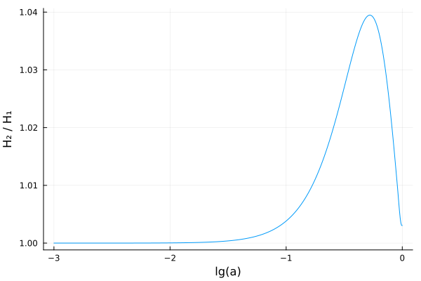

Creating extended models
This tutorial shows how to create extended (beyond-ΛCDM) models.
As a simple example, we will replace the cosmological constant Λ with equation of state $P(t) / \rho(t) = w(t) = -1$ in the pure ΛCDM model with the w₀wₐ-parametrization from Chevallier, Polarski (2000) and Linder (2002) with equation of state
\[w(t) = w_0 + w_a (1 - a(t)).\]
With this equation of state, solving the continuity equation
\[\frac{\mathrm{d} \rho(t)}{\mathrm{d}t} = -3 H(t) \, (ρ(t) + P(t)) = -3 H(t) \, \rho(t) \, (1 + w(t))\]
with the ansatz $\rho(t) = \rho(t_0) \, a(t)^m \exp(n (1 - a(t)))$ gives $m = -3 (1 + w_0 + w_a)$, $n = -3 w_a$ and hence
\[\rho(t) = \rho(t_0) \, a(t)^{1 + w_0 + w_a} \exp(w_a (1 - a(t))).\]
TODO: use t for cosmic time, τ for conformal time
Create the symbolic component
SymBoltz.jl represents each component of the Einstein-Boltzmann equations as a partial/incomplete ModelingToolkit.jl ODESystem. These are effectively "chunks" of logically related parameters, variables, equations and initial conditions that are composed together into a full/complete cosmological model. Let us create a component for the w₀wₐ-parametrization:
using ModelingToolkit # must be loaded to create custom components
using SymBoltz: t, ϵ # load conformal time and perturbation book-keeper
# Create a function that creates a symbolic w0wa dark energy component
function w0wa(g; kwargs...)
# 1. Create parameters
pars = @parameters w0 wa ρ0 Ω0
# 2. Create variables
vars = @variables ρ(t) P(t) w(t) δ(t) σ(t)
# 3. Specify background equations (~ means equality in ModelingToolkit)
eqs0 = [
w ~ w0 + wa * (1 - g.a) # equation of state
ρ ~ ρ0 * g.a^(-3 * (1 + w0 + wa)) * exp(-3 * wa * (1 - g.a)) # energy density
P ~ w * ρ # pressure
] .|> SymBoltz.O(ϵ^0) # O(ϵ⁰) multiplies all equations by 1 (no effect), marking them as background equations
# 4. Specify perturbation (O(ϵ^0)) equations # TODO: include
eqs1 = [
δ ~ 0 # energy overdensity
σ ~ 0 # shear stress
] .|> SymBoltz.O(ϵ^1) # O(ϵ^1) multiplies all equations by ϵ, marking them as perturbation equations
# 5. Specify relationships between parameters
defaults = [
ρ0 => 3/8π * Ω0
]
# 6. Pack everything into an ODE system
return ODESystem([eqs0; eqs1], t, vars, pars; defaults, kwargs...)
end
# TODO: should illustrate initialization_eqs behaviorw0wa (generic function with 1 method)Create the standard and extended models
We can now create both the standard ΛCDM model, and then recreate it with the cosmological constant replaced by the w₀wₐ-component to construct the extended w₀wₐCDM model:
# TODO: start with M1 from the very top, then add M2 later
using SymBoltz
M1 = ΛCDM(name = :ΛCDM)
X = w0wa(M1.sys.g; name = :X)
M2 = ΛCDM(Λ = X, name = :w0waCDM)CosmologyModel(ModelingToolkit.ODESystem(0x00000000000001ba, Symbolics.Equation[G₊ρ(t) ~ h₊ρ(t) + c₊ρ(t) + X₊ρ(t) + b₊ρ(t) + γ₊ρ(t) + ν₊ρ(t), b₊rec₊ρb(t) ~ 1.49828446428839e10(H0^2)*b₊ρ(t), b₊rec₊Tγ(t) ~ γ₊T(t), G₊δρ(t)*ϵ ~ (h₊ρ(t)*h₊δ(t) + c₊ρ(t)*c₊δ(t) + γ₊δ(t)*γ₊ρ(t) + X₊ρ(t)*X₊δ(t) + ν₊δ(t)*ν₊ρ(t) + b₊ρ(t)*b₊δ(t))*ϵ, G₊Π(t)*ϵ ~ ((h₊ρ(t) + h₊P(t))*h₊σ(t) + (b₊P(t) + b₊ρ(t))*b₊σ(t) + (c₊ρ(t) + c₊P(t))*c₊σ(t) + (X₊ρ(t) + X₊P(t))*X₊σ(t) + (γ₊ρ(t) + γ₊P(t))*γ₊σ(t) + (ν₊ρ(t) + ν₊P(t))*ν₊σ(t))*ϵ, b₊θinteraction(t)*ϵ ~ (-4(γ₊θ(t) - b₊θ(t))*γ₊ρ(t)*b₊rec₊dτ(t)*ϵ) / (3b₊ρ(t)), γ₊τ̇(t)*ϵ ~ b₊rec₊dτ(t)*ϵ, γ₊θb(t)*ϵ ~ b₊θ(t)*ϵ], t, Any[], SymbolicUtils.BasicSymbolic{Real}[C, fν, k], nothing, Dict{Any, Any}(:fν => fν, :k => k, :C => C), Any[], Symbolics.Equation[], Base.RefValue{Vector{Symbolics.Num}}(Symbolics.Num[]), Base.RefValue{Any}(Matrix{Symbolics.Num}(undef, 0, 0)), Base.RefValue{Any}(Matrix{Symbolics.Num}(undef, 0, 0)), Base.RefValue{Matrix{Symbolics.Num}}(Matrix{Symbolics.Num}(undef, 0, 0)), Base.RefValue{Matrix{Symbolics.Num}}(Matrix{Symbolics.Num}(undef, 0, 0)), :w0waCDM, ModelingToolkit.ODESystem[ModelingToolkit.ODESystem(0x00000000000001a6, Symbolics.Equation[ℰ(t) ~ Differential(t)(a(t)) / a(t), E(t) ~ ℰ(t) / a(t), ℋ(t) ~ H0*ℰ(t), H(t) ~ H0*E(t)], t, SymbolicUtils.BasicSymbolic{Real}[a(t), ℰ(t), E(t), H(t), ℋ(t), Φ(t), Ψ(t)], SymbolicUtils.BasicSymbolic{Real}[H0, h], nothing, Dict{Any, Any}(:a => a(t), :ℰ => ℰ(t), :H => H(t), :ℋ => ℋ(t), :Ψ => Ψ(t), :h => h, :Φ => Φ(t), :H0 => H0, :E => E(t)), Any[], Symbolics.Equation[], Base.RefValue{Vector{Symbolics.Num}}(Symbolics.Num[]), Base.RefValue{Any}(Matrix{Symbolics.Num}(undef, 0, 0)), Base.RefValue{Any}(Matrix{Symbolics.Num}(undef, 0, 0)), Base.RefValue{Matrix{Symbolics.Num}}(Matrix{Symbolics.Num}(undef, 0, 0)), Base.RefValue{Matrix{Symbolics.Num}}(Matrix{Symbolics.Num}(undef, 0, 0)), :g, ModelingToolkit.ODESystem[], Dict{Any, Any}(H0 => 3.240779289444365e-18h, h => 3.085677581491367e17H0), Dict{Any, Any}(), nothing, nothing, Symbolics.Equation[], nothing, nothing, nothing, ModelingToolkit.SymbolicContinuousCallback[], ModelingToolkit.SymbolicDiscreteCallback[], Symbolics.Equation[], nothing, nothing, nothing, nothing, false, nothing, nothing, nothing, nothing, nothing), ModelingToolkit.ODESystem(0x00000000000001a7, Symbolics.Equation[Differential(t)(a(t)) ~ sqrt(8.377580409572781ρ(t))*(a(t)^2), ρcrit(t) ~ 0.1193662073189215(E(t)^2), Differential(t)(Φ(t))*ϵ ~ ((-(k^2)*Φ(t)) / (3ℰ(t)) + (-4.1887902047863905δρ(t)*(a(t)^2)) / ℰ(t) - ℰ(t)*Ψ(t))*ϵ, (k^2)*(-Ψ(t) + Φ(t))*ϵ ~ 37.69911184307752Π(t)*(a(t)^2)*ϵ], t, SymbolicUtils.BasicSymbolic{Real}[ρ(t), ρcrit(t), δρ(t), Π(t)], Any[], nothing, Dict{Any, Any}(:ρ => ρ(t), :ρcrit => ρcrit(t), :δρ => δρ(t), :Π => Π(t)), Any[], Symbolics.Equation[], Base.RefValue{Vector{Symbolics.Num}}(Symbolics.Num[]), Base.RefValue{Any}(Matrix{Symbolics.Num}(undef, 0, 0)), Base.RefValue{Any}(Matrix{Symbolics.Num}(undef, 0, 0)), Base.RefValue{Matrix{Symbolics.Num}}(Matrix{Symbolics.Num}(undef, 0, 0)), Base.RefValue{Matrix{Symbolics.Num}}(Matrix{Symbolics.Num}(undef, 0, 0)), :G, ModelingToolkit.ODESystem[], Dict{Any, Any}(), Dict{Any, Any}(), nothing, nothing, Symbolics.Equation[], nothing, nothing, nothing, ModelingToolkit.SymbolicContinuousCallback[], ModelingToolkit.SymbolicDiscreteCallback[], Symbolics.Equation[], nothing, nothing, nothing, nothing, false, nothing, nothing, nothing, nothing, nothing), ModelingToolkit.ODESystem(0x00000000000001ad, Symbolics.Equation[Differential(t)(F0(t))*ϵ ~ (4Differential(t)(Φ(t)) - (F(t))[1]*k)*ϵ, Differential(t)((F(t))[1])*ϵ ~ ((-1.3333333333333333τ̇(t)*(-θ(t) + θb(t))) / k + (1//3)*(-2(F(t))[2] + 4Ψ(t) + F0(t))*k)*ϵ, Differential(t)((F(t))[2])*ϵ ~ (0.4(F(t))[1]*k + 0.9(F(t))[2]*τ̇(t) - 0.6(F(t))[3]*k - 0.1((G(t))[2] + G0(t))*τ̇(t))*ϵ, Differential(t)((F(t))[3])*ϵ ~ ((1//7)*(3(F(t))[2] - 4(F(t))[4])*k + (F(t))[3]*τ̇(t))*ϵ, Differential(t)((F(t))[4])*ϵ ~ ((1//9)*(4(F(t))[3] - 5(F(t))[5])*k + (F(t))[4]*τ̇(t))*ϵ, Differential(t)((F(t))[5])*ϵ ~ ((1//11)*(5(F(t))[4] - 6(F(t))[6])*k + (F(t))[5]*τ̇(t))*ϵ, Differential(t)((F(t))[6])*ϵ ~ ((-7(F(t))[6]) / t + (F(t))[5]*k + (F(t))[6]*τ̇(t))*ϵ, δ(t)*ϵ ~ F0(t)*ϵ, θ(t)*ϵ ~ 0.75(F(t))[1]*k*ϵ, σ(t)*ϵ ~ (1//2)*(F(t))[2]*ϵ … Differential(t)(G0(t))*ϵ ~ (-(G(t))[1]*k - ((1//2)*Π(t) - G0(t))*τ̇(t))*ϵ, Differential(t)((G(t))[1])*ϵ ~ ((G(t))[1]*τ̇(t) + (1//3)*(-2(G(t))[2] + G0(t))*k)*ϵ, Differential(t)((G(t))[2])*ϵ ~ ((1//5)*(2(G(t))[1] - 3(G(t))[3])*k - (-(G(t))[2] + (1//10)*Π(t))*τ̇(t))*ϵ, Differential(t)((G(t))[3])*ϵ ~ ((1//7)*(3(G(t))[2] - 4(G(t))[4])*k + (G(t))[3]*τ̇(t))*ϵ, Differential(t)((G(t))[4])*ϵ ~ ((1//9)*(4(G(t))[3] - 5(G(t))[5])*k + (G(t))[4]*τ̇(t))*ϵ, Differential(t)((G(t))[5])*ϵ ~ ((1//11)*(5(G(t))[4] - 6(G(t))[6])*k + (G(t))[5]*τ̇(t))*ϵ, Differential(t)((G(t))[6])*ϵ ~ ((-7(G(t))[6]) / t + (G(t))[5]*k + (G(t))[6]*τ̇(t))*ϵ, T(t) ~ T0 / a(t), P(t) ~ (1//3)*ρ(t), ρ(t) ~ ρ0 / (a(t)^(4//1))], t, SymbolicUtils.BasicSymbolic[F0(t), F(t), δ(t), θ(t), σ(t), τ̇(t), θb(t), Π(t), G0(t), G(t), T(t), ρ(t), P(t), Δ(t), θinteraction(t)], SymbolicUtils.BasicSymbolic{Real}[T0, Ω0, ρ0], nothing, Dict{Any, Any}(:F => F(t), :τ̇ => τ̇(t), :σ => σ(t), :Π => Π(t), :Δ => Δ(t), :T0 => T0, :G0 => G0(t), :δ => δ(t), :θinteraction => θinteraction(t), :θ => θ(t)…), Any[], Symbolics.Equation[], Base.RefValue{Vector{Symbolics.Num}}(Symbolics.Num[]), Base.RefValue{Any}(Matrix{Symbolics.Num}(undef, 0, 0)), Base.RefValue{Any}(Matrix{Symbolics.Num}(undef, 0, 0)), Base.RefValue{Matrix{Symbolics.Num}}(Matrix{Symbolics.Num}(undef, 0, 0)), Base.RefValue{Matrix{Symbolics.Num}}(Matrix{Symbolics.Num}(undef, 0, 0)), :γ, ModelingToolkit.ODESystem[], Dict{Any, Any}(T0 => 3.652549954221216e10(H0^0.5)*(ρ0^0.25), ρ0 => 0.1193662073189215Ω0), Dict{Any, Any}(), nothing, nothing, Symbolics.Equation[δ(t)*ϵ ~ -2Ψ(t)*ϵ, θ(t)*ϵ ~ 0.5(k^2)*t*Ψ(t)*ϵ, (F(t))[2]*ϵ ~ 0, (F(t))[3]*ϵ ~ 0, (F(t))[4]*ϵ ~ 0, (F(t))[5]*ϵ ~ 0, (F(t))[6]*ϵ ~ 0, G0(t)*ϵ ~ 0, (G(t))[1]*ϵ ~ 0, (G(t))[2]*ϵ ~ 0, (G(t))[3]*ϵ ~ 0, (G(t))[4]*ϵ ~ 0, (G(t))[5]*ϵ ~ 0, (G(t))[6]*ϵ ~ 0, 0 ~ -0.0], nothing, nothing, nothing, ModelingToolkit.SymbolicContinuousCallback[], ModelingToolkit.SymbolicDiscreteCallback[], Symbolics.Equation[], nothing, nothing, nothing, nothing, false, nothing, nothing, nothing, nothing, nothing), ModelingToolkit.ODESystem(0x00000000000001b3, Symbolics.Equation[Differential(t)(F0(t))*ϵ ~ (4Differential(t)(Φ(t)) - (F(t))[1]*k)*ϵ, Differential(t)((F(t))[1])*ϵ ~ (1//3)*(-2(F(t))[2] + 4Ψ(t) + F0(t))*k*ϵ, Differential(t)((F(t))[2])*ϵ ~ (1//5)*(2(F(t))[1] - 3(F(t))[3])*k*ϵ, Differential(t)((F(t))[3])*ϵ ~ (1//7)*(3(F(t))[2] - 4(F(t))[4])*k*ϵ, Differential(t)((F(t))[4])*ϵ ~ (1//9)*(4(F(t))[3] - 5(F(t))[5])*k*ϵ, Differential(t)((F(t))[5])*ϵ ~ (1//11)*(5(F(t))[4] - 6(F(t))[6])*k*ϵ, Differential(t)((F(t))[6])*ϵ ~ (1//13)*(6(F(t))[5] - 7(F(t))[7])*k*ϵ, (F(t))[7]*ϵ ~ (-(F(t))[5] + (13(F(t))[6]) / (k*t))*ϵ, δ(t)*ϵ ~ F0(t)*ϵ, θ(t)*ϵ ~ 0.75(F(t))[1]*k*ϵ, σ(t)*ϵ ~ (1//2)*(F(t))[2]*ϵ, T(t) ~ T0 / a(t), P(t) ~ (1//3)*ρ(t), ρ(t) ~ ρ0 / (a(t)^(4//1))], t, SymbolicUtils.BasicSymbolic[F0(t), F(t), δ(t), θ(t), σ(t), T(t), ρ(t), P(t), Δ(t), θinteraction(t)], SymbolicUtils.BasicSymbolic{Real}[Neff, T0, Ω0, ρ0], nothing, Dict{Any, Any}(:F => F(t), :σ => σ(t), :Δ => Δ(t), :T0 => T0, :δ => δ(t), :θinteraction => θinteraction(t), :θ => θ(t), :T => T(t), :ρ => ρ(t), :P => P(t)…), Any[], Symbolics.Equation[], Base.RefValue{Vector{Symbolics.Num}}(Symbolics.Num[]), Base.RefValue{Any}(Matrix{Symbolics.Num}(undef, 0, 0)), Base.RefValue{Any}(Matrix{Symbolics.Num}(undef, 0, 0)), Base.RefValue{Matrix{Symbolics.Num}}(Matrix{Symbolics.Num}(undef, 0, 0)), Base.RefValue{Matrix{Symbolics.Num}}(Matrix{Symbolics.Num}(undef, 0, 0)), :ν, ModelingToolkit.ODESystem[], Dict{Any, Any}(Neff => 3.046, T0 => NaN, ρ0 => 0.1193662073189215Ω0), Dict{Any, Any}(), nothing, nothing, Symbolics.Equation[δ(t)*ϵ ~ -2Ψ(t)*ϵ, θ(t)*ϵ ~ 0.5(k^2)*t*Ψ(t)*ϵ, σ(t)*ϵ ~ 0.06666666666666667(k^2)*(t^2)*Ψ(t)*ϵ, (F(t))[3]*ϵ ~ 0, (F(t))[4]*ϵ ~ 0, (F(t))[5]*ϵ ~ 0, (F(t))[6]*ϵ ~ 0, 0 ~ -0.0], nothing, nothing, nothing, ModelingToolkit.SymbolicContinuousCallback[], ModelingToolkit.SymbolicDiscreteCallback[], Symbolics.Equation[], nothing, nothing, nothing, nothing, false, nothing, nothing, nothing, nothing, nothing), ModelingToolkit.ODESystem(0x00000000000001b5, Symbolics.Equation[P(t) ~ 0, ρ(t) ~ ρ0 / (a(t)^3), Differential(t)(δ(t))*ϵ ~ (-θ(t) + 3Differential(t)(Φ(t)))*ϵ, Differential(t)(θ(t))*ϵ ~ (θinteraction(t) - ℰ(t)*θ(t) - (k^2)*σ(t) + (k^2)*Ψ(t))*ϵ, Δ(t)*ϵ ~ (δ(t) + (3ℰ(t)) / θ(t))*ϵ, σ(t)*ϵ ~ 0, θinteraction(t)*ϵ ~ 0], t, SymbolicUtils.BasicSymbolic{Real}[ρ(t), P(t), δ(t), θ(t), Δ(t), θinteraction(t), σ(t)], SymbolicUtils.BasicSymbolic{Real}[Ω0, ρ0], nothing, Dict{Any, Any}(:ρ => ρ(t), :P => P(t), :σ => σ(t), :ρ0 => ρ0, :δ => δ(t), :Δ => Δ(t), :θinteraction => θinteraction(t), :θ => θ(t), :Ω0 => Ω0), Any[], Symbolics.Equation[], Base.RefValue{Vector{Symbolics.Num}}(Symbolics.Num[]), Base.RefValue{Any}(Matrix{Symbolics.Num}(undef, 0, 0)), Base.RefValue{Any}(Matrix{Symbolics.Num}(undef, 0, 0)), Base.RefValue{Matrix{Symbolics.Num}}(Matrix{Symbolics.Num}(undef, 0, 0)), Base.RefValue{Matrix{Symbolics.Num}}(Matrix{Symbolics.Num}(undef, 0, 0)), :c, ModelingToolkit.ODESystem[], Dict{Any, Any}(ρ0 => 0.1193662073189215Ω0), Dict{Any, Any}(), nothing, nothing, Symbolics.Equation[δ(t)*ϵ ~ -1.5Ψ(t)*ϵ, θ(t)*ϵ ~ 0.5(k^2)*t*Ψ(t)*ϵ], nothing, nothing, nothing, ModelingToolkit.SymbolicContinuousCallback[], ModelingToolkit.SymbolicDiscreteCallback[], Symbolics.Equation[], nothing, nothing, nothing, nothing, false, nothing, nothing, nothing, nothing, nothing), ModelingToolkit.ODESystem(0x00000000000001b6, Symbolics.Equation[P(t) ~ 0, ρ(t) ~ ρ0 / (a(t)^3), Differential(t)(δ(t))*ϵ ~ (-θ(t) + 3Differential(t)(Φ(t)))*ϵ, Differential(t)(θ(t))*ϵ ~ (θinteraction(t) - ℰ(t)*θ(t) - (k^2)*σ(t) + (k^2)*Ψ(t))*ϵ, Δ(t)*ϵ ~ (δ(t) + (3ℰ(t)) / θ(t))*ϵ, σ(t)*ϵ ~ 0], t, SymbolicUtils.BasicSymbolic{Real}[ρ(t), P(t), δ(t), θ(t), Δ(t), θinteraction(t), σ(t)], SymbolicUtils.BasicSymbolic{Real}[Ω0, ρ0], nothing, Dict{Any, Any}(:ρ => ρ(t), :P => P(t), :σ => σ(t), :ρ0 => ρ0, :δ => δ(t), :Δ => Δ(t), :θinteraction => θinteraction(t), :θ => θ(t), :Ω0 => Ω0), Any[], Symbolics.Equation[], Base.RefValue{Vector{Symbolics.Num}}(Symbolics.Num[]), Base.RefValue{Any}(Matrix{Symbolics.Num}(undef, 0, 0)), Base.RefValue{Any}(Matrix{Symbolics.Num}(undef, 0, 0)), Base.RefValue{Matrix{Symbolics.Num}}(Matrix{Symbolics.Num}(undef, 0, 0)), Base.RefValue{Matrix{Symbolics.Num}}(Matrix{Symbolics.Num}(undef, 0, 0)), :b, ModelingToolkit.ODESystem[ModelingToolkit.ODESystem(0x00000000000001b7, Symbolics.Equation[nH(t) ~ 5.9743459941280975e26(1 - Yp)*ρb(t), nHe(t) ~ fHe*nH(t), Differential(t)(Tb(t)) ~ (-4.914646075258282e-22Xe(t)*(Tb(t) - Tγ(t))*a(t)*(Tγ(t)^4)) / (H0*(1 + fHe + Xe(t))) - 2ℰ(t)*Tb(t), DTb(t) ~ Differential(t)(Tb(t)), βb(t) ~ 1 / (1.380649e-23Tb(t)), λe(t) ~ 6.62607015e-34 / sqrt(5.7235945830726e-30 / βb(t)), μ(t) ~ 1.6738233791328e-27 / (1 - 0.7481638194354572Yp + (1 - Yp)*Xe(t)), cs²(t) ~ (1.380649e-23(Tb(t) + (-Differential(t)(Tb(t))) / (3ℰ(t)))) / (8.987551787368176e16μ(t)), αH(t) ~ 4.91226e-19 / (0.0034166461281382246(1 + 0.005084745485420618(Tb(t)^0.53))*(Tb(t)^0.6166)), βH(t) ~ (αH(t)*exp(-5.446757792806927e-19βb(t))) / (λe(t)^3) … γ2Pt(t) ~ (1.863348560884535e-12fHe*(1.0000000001 - XHe⁺(t))) / (1.8917344926306964e-5sqrt(6.283185307179586 / (5.973555614264941e-10βb(t)))*(1.0000000001 - XH⁺(t))), CHe3(t) ~ (1.0e-10 + 177.58exp(-1.8337174696021622e-19βb(t))*((1//3) / (1 + 0.66(γ2Pt(t)^0.9)) + pHe3(t))) / (1.0e-10 + βHe3(t) + 177.58exp(-1.8337174696021622e-19βb(t))*((1//3) / (1 + 0.66(γ2Pt(t)^0.9)) + pHe3(t))), DXHe⁺_triplet(t) ~ (-CHe3(t)*(ne(t)*αHe3(t)*XHe⁺(t) - 3exp(-3.175452923444847e-18βb(t))*βHe3(t)*(1 - XHe⁺(t)))*a(t)) / H0, Differential(t)(XHe⁺(t)) ~ DXHe⁺_triplet(t) + DXHe⁺_singlet(t), RHe⁺(t) ~ exp(-8.718692763368519e-18βb(t)) / (nH(t)*(λe(t)^3)), XHe⁺⁺(t) ~ (2fHe*RHe⁺(t)) / ((1 + fHe + RHe⁺(t))*(1 + sqrt(1 + (4fHe*RHe⁺(t)) / ((1 + fHe + RHe⁺(t))^2)))), Xe(t) ~ XHe⁺⁺(t) + XH⁺(t) + fHe*XHe⁺(t), ne(t) ~ Xe(t)*nH(t), dτ(t) ~ (-1.9943569550398225e-20ne(t)*a(t)) / H0, Differential(t)(τ(t)) ~ dτ(t)], t, SymbolicUtils.BasicSymbolic{Real}[ρb(t), Xe(t), XH⁺(t), XHe⁺(t), XHe⁺⁺(t), τ(t), dτ(t), Tb(t), Tγ(t)], SymbolicUtils.BasicSymbolic{Real}[Yp, fHe], nothing, Dict{Any, Any}(:Tb => Tb(t), :Tγ => Tγ(t), :XHe⁺ => XHe⁺(t), :XH⁺ => XH⁺(t), :ρb => ρb(t), :fHe => fHe, :dτ => dτ(t), :Yp => Yp, :Xe => Xe(t), :XHe⁺⁺ => XHe⁺⁺(t)…), Any[], Symbolics.Equation[], Base.RefValue{Vector{Symbolics.Num}}(Symbolics.Num[]), Base.RefValue{Any}(Matrix{Symbolics.Num}(undef, 0, 0)), Base.RefValue{Any}(Matrix{Symbolics.Num}(undef, 0, 0)), Base.RefValue{Matrix{Symbolics.Num}}(Matrix{Symbolics.Num}(undef, 0, 0)), Base.RefValue{Matrix{Symbolics.Num}}(Matrix{Symbolics.Num}(undef, 0, 0)), :rec, ModelingToolkit.ODESystem[], Dict{Any, Any}(fHe => Yp / (3.9708353174603177(1 - Yp)), τ(t) => 0.0), Dict{Any, Any}(), nothing, nothing, Symbolics.Equation[XHe⁺(t) ~ 1, XH⁺(t) ~ 1 + (-αH(t)) / βH(t), Tb(t) ~ Tγ(t)], nothing, nothing, nothing, ModelingToolkit.SymbolicContinuousCallback[], ModelingToolkit.SymbolicDiscreteCallback[], Symbolics.Equation[], nothing, nothing, nothing, nothing, false, nothing, nothing, nothing, nothing, nothing)], Dict{Any, Any}(ρ0 => 0.1193662073189215Ω0), Dict{Any, Any}(), nothing, nothing, Symbolics.Equation[δ(t)*ϵ ~ -1.5Ψ(t)*ϵ, θ(t)*ϵ ~ 0.5(k^2)*t*Ψ(t)*ϵ], nothing, nothing, nothing, ModelingToolkit.SymbolicContinuousCallback[], ModelingToolkit.SymbolicDiscreteCallback[], Symbolics.Equation[], nothing, nothing, nothing, nothing, false, nothing, nothing, nothing, nothing, nothing), ModelingToolkit.ODESystem(0x00000000000001b4, Symbolics.Equation[T(t) ~ T0 / a(t), y(t) ~ (8.987551787368176e16m) / (1.380649e-23T(t)), ρ(t) ~ (0.17598826722315755(0.4391089583352607sqrt(1.2465163092875968 + y(t)^2) + 0.35938009155727607sqrt(32.60892091661843 + y(t)^2) + 0.0002449948622755444sqrt(253.06639876381035 + y(t)^2) + 0.9776268000736039sqrt(8.647402132971944 + y(t)^2) + 0.026724509910959555sqrt(95.36522818908514 + y(t)^2))*ρ0_massless) / (a(t)^4), P(t) ~ (0.058662755741052515(11.718996984598306 / sqrt(32.60892091661843 + y(t)^2) + 0.5473564781191903 / sqrt(1.2465163092875968 + y(t)^2) + 2.5485889859001256 / sqrt(95.36522818908514 + y(t)^2) + 8.45393207620702 / sqrt(8.647402132971944 + y(t)^2) + 0.061999967511707714 / sqrt(253.06639876381035 + y(t)^2))*ρ0_massless) / (a(t)^4), w(t) ~ P(t) / ρ(t), δ(t)*ϵ ~ ((0.4391089583352607sqrt(1.2465163092875968 + y(t)^2)*(ψ0(t))[1] + 0.35938009155727607sqrt(32.60892091661843 + y(t)^2)*(ψ0(t))[3] + 0.0002449948622755444sqrt(253.06639876381035 + y(t)^2)*(ψ0(t))[5] + 0.9776268000736039sqrt(8.647402132971944 + y(t)^2)*(ψ0(t))[2] + 0.026724509910959555sqrt(95.36522818908514 + y(t)^2)*(ψ0(t))[4])*ϵ) / (0.4391089583352607sqrt(1.2465163092875968 + y(t)^2) + 0.35938009155727607sqrt(32.60892091661843 + y(t)^2) + 0.0002449948622755444sqrt(253.06639876381035 + y(t)^2) + 0.9776268000736039sqrt(8.647402132971944 + y(t)^2) + 0.026724509910959555sqrt(95.36522818908514 + y(t)^2)), σ(t)*ϵ ~ (0.6666666666666666((0.5473564781191903(ψ(t))[1, 2]) / sqrt(1.2465163092875968 + y(t)^2) + (8.45393207620702(ψ(t))[2, 2]) / sqrt(8.647402132971944 + y(t)^2) + (2.5485889859001256(ψ(t))[4, 2]) / sqrt(95.36522818908514 + y(t)^2) + (11.718996984598306(ψ(t))[3, 2]) / sqrt(32.60892091661843 + y(t)^2) + (0.061999967511707714(ψ(t))[5, 2]) / sqrt(253.06639876381035 + y(t)^2))*ϵ) / (0.4391089583352607sqrt(1.2465163092875968 + y(t)^2) + 0.3333333333333333(11.718996984598306 / sqrt(32.60892091661843 + y(t)^2) + 0.5473564781191903 / sqrt(1.2465163092875968 + y(t)^2) + 2.5485889859001256 / sqrt(95.36522818908514 + y(t)^2) + 8.45393207620702 / sqrt(8.647402132971944 + y(t)^2) + 0.061999967511707714 / sqrt(253.06639876381035 + y(t)^2)) + 0.35938009155727607sqrt(32.60892091661843 + y(t)^2) + 0.0002449948622755444sqrt(253.06639876381035 + y(t)^2) + 0.9776268000736039sqrt(8.647402132971944 + y(t)^2) + 0.026724509910959555sqrt(95.36522818908514 + y(t)^2)), Differential(t)((ψ0(t))[1])*ϵ ~ ((-1.1164749478996816k*(ψ(t))[1, 1]) / sqrt(1.2465163092875968 + y(t)^2) + 0.8410788400909917Differential(t)(Φ(t)))*ϵ, Differential(t)((ψ(t))[1, 1])*ϵ ~ ((0.3721583159665605k*(-2(ψ(t))[1, 2] + (ψ0(t))[1])) / sqrt(1.2465163092875968 + y(t)^2) + 0.2511114234054941k*sqrt(1.2465163092875968 + y(t)^2)*Ψ(t))*ϵ, Differential(t)((ψ(t))[1, 2])*ϵ ~ (0.22329498957993632k*(2(ψ(t))[1, 1] - 3(ψ(t))[1, 3])*ϵ) / sqrt(1.2465163092875968 + y(t)^2) … Differential(t)((ψ(t))[4, 2])*ϵ ~ (1.9531024365258998k*(2(ψ(t))[4, 1] - 3(ψ(t))[4, 3])*ϵ) / sqrt(95.36522818908514 + y(t)^2), Differential(t)((ψ(t))[4, 3])*ϵ ~ (1.3950731689470712k*(3(ψ(t))[4, 2] - 4(ψ(t))[4, 4])*ϵ) / sqrt(95.36522818908514 + y(t)^2), Differential(t)((ψ(t))[4, 4])*ϵ ~ (1.0850569091810554k*(4(ψ(t))[4, 3] - 5(ψ(t))[4, 5])*ϵ) / sqrt(95.36522818908514 + y(t)^2), (ψ(t))[4, 5]*ϵ ~ ((0.9216106469058365sqrt(95.36522818908514 + y(t)^2)*(ψ(t))[4, 4]) / (k*t) - (ψ(t))[4, 3])*ϵ, Differential(t)((ψ0(t))[5])*ϵ ~ ((-15.90806081091628k*(ψ(t))[5, 1]) / sqrt(253.06639876381035 + y(t)^2) + 15.908058848305584Differential(t)(Φ(t)))*ϵ, Differential(t)((ψ(t))[5, 1])*ϵ ~ ((5.302686936972093k*(-2(ψ(t))[5, 2] + (ψ0(t))[5])) / sqrt(253.06639876381035 + y(t)^2) + 0.33333329220930363k*sqrt(253.06639876381035 + y(t)^2)*Ψ(t))*ϵ, Differential(t)((ψ(t))[5, 2])*ϵ ~ (3.1816121621832565k*(2(ψ(t))[5, 1] - 3(ψ(t))[5, 3])*ϵ) / sqrt(253.06639876381035 + y(t)^2), Differential(t)((ψ(t))[5, 3])*ϵ ~ (2.272580115845183k*(3(ψ(t))[5, 2] - 4(ψ(t))[5, 4])*ϵ) / sqrt(253.06639876381035 + y(t)^2), Differential(t)((ψ(t))[5, 4])*ϵ ~ (1.7675623123240312k*(4(ψ(t))[5, 3] - 5(ψ(t))[5, 5])*ϵ) / sqrt(253.06639876381035 + y(t)^2), (ψ(t))[5, 5]*ϵ ~ ((0.565750917536354sqrt(253.06639876381035 + y(t)^2)*(ψ(t))[5, 4]) / (k*t) - (ψ(t))[5, 3])*ϵ], t, SymbolicUtils.BasicSymbolic[ρ(t), T(t), y(t), P(t), w(t), δ(t), σ(t), θ(t), ψ0(t), ψ(t)], SymbolicUtils.BasicSymbolic{Real}[Ω0_massless, ρ0_massless, Ω0, ρ0, m, T0, y0], nothing, Dict{Any, Any}(:Ω0_massless => Ω0_massless, :w => w(t), :σ => σ(t), :y0 => y0, :ρ0_massless => ρ0_massless, :T0 => T0, :δ => δ(t), :θ => θ(t), :T => T(t), :ρ => ρ(t)…), Any[], Symbolics.Equation[], Base.RefValue{Vector{Symbolics.Num}}(Symbolics.Num[]), Base.RefValue{Any}(Matrix{Symbolics.Num}(undef, 0, 0)), Base.RefValue{Any}(Matrix{Symbolics.Num}(undef, 0, 0)), Base.RefValue{Matrix{Symbolics.Num}}(Matrix{Symbolics.Num}(undef, 0, 0)), Base.RefValue{Matrix{Symbolics.Num}}(Matrix{Symbolics.Num}(undef, 0, 0)), :h, ModelingToolkit.ODESystem[], Dict{Any, Any}(Ω0 => 0.17598826722315755(0.026724509910959555sqrt(95.36522818908514 + y0^2) + 0.4391089583352607sqrt(1.2465163092875968 + y0^2) + 0.0002449948622755444sqrt(253.06639876381035 + y0^2) + 0.35938009155727607sqrt(32.60892091661843 + y0^2) + 0.9776268000736039sqrt(8.647402132971944 + y0^2))*Ω0_massless, ρ0_massless => 0.1193662073189215Ω0_massless, ρ0 => 0.1193662073189215Ω0, y0 => (8.987551787368176e16m) / (1.380649e-23T0), m => 3.565323843255795e-38), Dict{Any, Any}(), nothing, nothing, Symbolics.Equation[(ψ0(t))[1]*ϵ ~ -0.4205394200454958Ψ(t)*ϵ, (ψ(t))[1, 1]*ϵ ~ (0.3766671351082411k*t*sqrt(1.2465163092875968 + y(t)^2)*Ψ(t)*ϵ) / 3, (ψ(t))[1, 2]*ϵ ~ 0.028035961336366388(k^2)*(t^2)*Ψ(t)*ϵ, (ψ(t))[1, 3]*ϵ ~ 0, (ψ(t))[1, 4]*ϵ ~ 0, (ψ0(t))[2]*ϵ ~ -1.3965417942658458Ψ(t)*ϵ, (ψ(t))[2, 1]*ϵ ~ (0.47490977594350275k*t*sqrt(8.647402132971944 + y(t)^2)*Ψ(t)*ϵ) / 3, (ψ(t))[2, 2]*ϵ ~ 0.09310278628438971(k^2)*(t^2)*Ψ(t)*ϵ, (ψ(t))[2, 3]*ϵ ~ 0, (ψ(t))[2, 4]*ϵ ~ 0 … (ψ0(t))[4]*ϵ ~ -4.882475850072168Ψ(t)*ϵ, (ψ(t))[4, 1]*ϵ ~ (0.4999713029652372k*t*Ψ(t)*sqrt(95.36522818908514 + y(t)^2)*ϵ) / 3, (ψ(t))[4, 2]*ϵ ~ 0.3254983900048112(k^2)*(t^2)*Ψ(t)*ϵ, (ψ(t))[4, 3]*ϵ ~ 0, (ψ(t))[4, 4]*ϵ ~ 0, (ψ0(t))[5]*ϵ ~ -7.954029424152792Ψ(t)*ϵ, (ψ(t))[5, 1]*ϵ ~ (0.49999993831395545k*t*sqrt(253.06639876381035 + y(t)^2)*Ψ(t)*ϵ) / 3, (ψ(t))[5, 2]*ϵ ~ 0.5302686282768528(k^2)*(t^2)*Ψ(t)*ϵ, (ψ(t))[5, 3]*ϵ ~ 0, (ψ(t))[5, 4]*ϵ ~ 0], nothing, nothing, nothing, ModelingToolkit.SymbolicContinuousCallback[], ModelingToolkit.SymbolicDiscreteCallback[], Symbolics.Equation[], nothing, nothing, nothing, nothing, false, nothing, nothing, nothing, nothing, nothing), ModelingToolkit.ODESystem(0x00000000000001a5, Symbolics.Equation[w(t) ~ w0 + wa*(1 - a(t)), ρ(t) ~ exp(-3wa*(1 - a(t)))*(a(t)^(-3(1 + w0 + wa)))*ρ0, P(t) ~ ρ(t)*w(t), δ(t)*ϵ ~ 0, σ(t)*ϵ ~ 0], t, SymbolicUtils.BasicSymbolic{Real}[ρ(t), P(t), w(t), δ(t), σ(t)], SymbolicUtils.BasicSymbolic{Real}[w0, wa, ρ0, Ω0], nothing, Dict{Any, Any}(:ρ => ρ(t), :P => P(t), :w => w(t), :σ => σ(t), :ρ0 => ρ0, :δ => δ(t), :wa => wa, :Ω0 => Ω0, :w0 => w0), Any[], Symbolics.Equation[], Base.RefValue{Vector{Symbolics.Num}}(Symbolics.Num[]), Base.RefValue{Any}(Matrix{Symbolics.Num}(undef, 0, 0)), Base.RefValue{Any}(Matrix{Symbolics.Num}(undef, 0, 0)), Base.RefValue{Matrix{Symbolics.Num}}(Matrix{Symbolics.Num}(undef, 0, 0)), Base.RefValue{Matrix{Symbolics.Num}}(Matrix{Symbolics.Num}(undef, 0, 0)), :X, ModelingToolkit.ODESystem[], Dict{Any, Any}(ρ0 => 0.1193662073189215Ω0), Dict{Any, Any}(), nothing, nothing, Symbolics.Equation[], nothing, nothing, nothing, ModelingToolkit.SymbolicContinuousCallback[], ModelingToolkit.SymbolicDiscreteCallback[], Symbolics.Equation[], nothing, nothing, nothing, nothing, false, nothing, nothing, nothing, nothing, nothing)], Dict{Any, Any}(γ₊Ω0 => 1 - X₊Ω0 - b₊Ω0 - c₊Ω0 - h₊Ω0 - ν₊Ω0, C => 0.48, c₊Ω0 => 1 - X₊Ω0 - b₊Ω0 - h₊Ω0 - γ₊Ω0 - ν₊Ω0, k => NaN, X₊Ω0 => 1 - b₊Ω0 - c₊Ω0 - h₊Ω0 - γ₊Ω0 - ν₊Ω0, b₊Ω0 => 1 - X₊Ω0 - c₊Ω0 - h₊Ω0 - γ₊Ω0 - ν₊Ω0, ν₊Ω0 => 0.07570243922007966γ₊Ω0*ν₊Neff, h₊Ω0_massless => 0.875((h₊T0 / γ₊T0)^4)*γ₊Ω0, h₊T0 => 0.5423447682112796γ₊T0*(ν₊Neff^0.25), a(t) => t*sqrt(h₊Ω0_massless + γ₊Ω0 + ν₊Ω0)…), Dict{Any, Any}(), nothing, nothing, Symbolics.Equation[], nothing, nothing, nothing, ModelingToolkit.SymbolicContinuousCallback[], ModelingToolkit.SymbolicDiscreteCallback[], Symbolics.Equation[], nothing, nothing, nothing, nothing, true, ModelingToolkit.IndexCache(Dict{SymbolicUtils.BasicSymbolic, Union{Int64, AbstractArray{Int64}}}(b₊θ(t) => 63, c₊Δ(t) => 57, h₊ρ(t) => 76, w0waCDM₊γ₊F0(t) => 12, w0waCDM₊b₊Δ(t) => 64, w0waCDM₊γ₊δ(t) => 19, c₊θinteraction(t) => 58, X₊ρ(t) => 114, w0waCDM₊γ₊G(t) => 26:31, G₊ρ(t) => 8…), Dict{SymbolicUtils.BasicSymbolic, Tuple{Int64, Int64, Int64}}(), Dict{SymbolicUtils.BasicSymbolic, Union{UnitRange{Int64}, Int64, Base.ReshapedArray{Int64, N, UnitRange{Int64}} where N}}(c₊ρ0 => 1, h₊y0 => 29, H0 => 3, γ₊Ω0 => 4, C => 5, h₊m => 6, c₊Ω0 => 7, h₊ρ0_massless => 8, γ₊ρ0 => 9, k => 10…), Dict{SymbolicUtils.BasicSymbolic, Tuple{Int64, Int64}}(), Dict{SymbolicUtils.BasicSymbolic, Tuple{Int64, Int64}}(), Set{SymbolicUtils.BasicSymbolic}(), Set{SymbolicUtils.BasicSymbolic}(), Vector{ModelingToolkit.BufferTemplate}[], ModelingToolkit.BufferTemplate(Real, 29), ModelingToolkit.BufferTemplate[], ModelingToolkit.BufferTemplate[], Dict{Symbol, SymbolicUtils.BasicSymbolic}(:γ₊F0 => γ₊F0(t), :w0waCDM₊h₊σ => w0waCDM₊h₊σ(t), :w0waCDM₊h₊ψ0 => w0waCDM₊h₊ψ0(t), :γ₊θ => γ₊θ(t), :h₊T => h₊T(t), :c₊δ => c₊δ(t), :w0waCDM₊c₊δ => w0waCDM₊c₊δ(t), :w0waCDM₊b₊rec₊XH⁺ => w0waCDM₊b₊rec₊XH⁺(t), :c₊θ => c₊θ(t), :w0waCDM₊γ₊G0 => w0waCDM₊γ₊G0(t)…)), nothing, nothing, nothing, nothing), ModelingToolkit.ODESystem(0x00000000000001c5, Symbolics.Equation[Differential(t)(a(t)) ~ sqrt(8.377580409572781G₊ρ(t))*(a(t)^2), Differential(t)(b₊rec₊Tb(t)) ~ (-4.914646075258282e-22(-b₊rec₊Tγ(t) + b₊rec₊Tb(t))*(b₊rec₊Tγ(t)^4)*a(t)*b₊rec₊Xe(t)) / (H0*(1 + b₊rec₊fHe + b₊rec₊Xe(t))) - 2.0ℰ(t)*b₊rec₊Tb(t), Differential(t)(b₊rec₊XH⁺(t)) ~ ((-b₊rec₊ne(t)*b₊rec₊αH(t)*b₊rec₊XH⁺(t) + b₊rec₊βH(t)*(1 - b₊rec₊XH⁺(t))*exp(-1.6340337897200137e-18b₊rec₊βb(t)))*b₊rec₊CH(t)*a(t)) / H0, Differential(t)(b₊rec₊XHe⁺(t)) ~ b₊rec₊DXHe⁺_triplet(t) + b₊rec₊DXHe⁺_singlet(t), Differential(t)(b₊rec₊τ(t)) ~ b₊rec₊dτ(t)], t, Any[a(t), b₊rec₊Tb(t), b₊rec₊XH⁺(t), b₊rec₊XHe⁺(t), b₊rec₊τ(t)], SymbolicUtils.BasicSymbolic{Real}[C, fν, k, H0, h, γ₊T0, γ₊Ω0, γ₊ρ0, ν₊Neff, ν₊T0 … h₊ρ0_massless, h₊Ω0, h₊ρ0, h₊m, h₊T0, h₊y0, X₊w0, X₊wa, X₊ρ0, X₊Ω0], nothing, Dict{Any, Any}(:γ₊F0 => γ₊F0(t), :G₊δρ => G₊δρ(t), :γ₊G => γ₊G(t), :b₊θ => b₊θ(t), :ℋ => ℋ(t), :h₊Ω0_massless => h₊Ω0_massless, :γ₊θ => γ₊θ(t), :h₊T => h₊T(t), :c₊δ => c₊δ(t), :h₊ρ => h₊ρ(t)…), Any[], Symbolics.Equation[h₊T(t) ~ h₊T0 / a(t), X₊ρ(t) ~ X₊ρ0*(a(t)^(-3(1 + X₊w0 + X₊wa)))*exp(-3X₊wa*(1 - a(t))), γ₊ρ(t) ~ γ₊ρ0 / (a(t)^(4//1)), c₊ρ(t) ~ c₊ρ0 / (a(t)^3), b₊ρ(t) ~ b₊ρ0 / (a(t)^3), ν₊ρ(t) ~ ν₊ρ0 / (a(t)^(4//1)), γ₊T(t) ~ γ₊T0 / a(t), ν₊T(t) ~ ν₊T0 / a(t), c₊P(t) ~ 0.0, b₊P(t) ~ 0.0 … b₊rec₊KH1(t) ~ (-0.14exp(-30.864197530864196((7.28 + log(a(t)))^2)) + 0.079exp(-9.182736455463727((6.73 + log(a(t)))^2)))*b₊rec₊KH0(t), b₊rec₊KHe1⁻¹(t) ~ -b₊rec₊KHe0⁻¹(t)*exp((-5.394861e9b₊rec₊nHe(t)*(1.0000000001 - b₊rec₊XHe⁺(t))) / b₊rec₊KHe0⁻¹(t)), b₊rec₊pHe3(t) ~ (1 - exp(-b₊rec₊τHe3(t))) / b₊rec₊τHe3(t), b₊rec₊KH(t) ~ b₊rec₊KH1(t) + b₊rec₊KH0(t), b₊rec₊KHe(t) ~ 1 / (b₊rec₊KHe0⁻¹(t) + b₊rec₊KHe2⁻¹(t) + b₊rec₊KHe1⁻¹(t)), b₊rec₊CHe3(t) ~ (1.0e-10 + 177.58(b₊rec₊pHe3(t) + (1//3) / (1 + 0.66(b₊rec₊γ2Pt(t)^0.9)))*exp(-1.8337174696021622e-19b₊rec₊βb(t))) / (1.0e-10 + b₊rec₊βHe3(t) + 177.58(b₊rec₊pHe3(t) + (1//3) / (1 + 0.66(b₊rec₊γ2Pt(t)^0.9)))*exp(-1.8337174696021622e-19b₊rec₊βb(t))), b₊rec₊CH(t) ~ (1 + 8.2245809b₊rec₊nH(t)*b₊rec₊KH(t)*(1.0000000001 - b₊rec₊XH⁺(t))) / (1 + b₊rec₊nH(t)*(8.2245809 + b₊rec₊βH(t))*b₊rec₊KH(t)*(1.0000000001 - b₊rec₊XH⁺(t))), b₊rec₊CHe(t) ~ (exp(-9.649052516686252e-20b₊rec₊βb(t)) + 51.3b₊rec₊nHe(t)*(1 - b₊rec₊XHe⁺(t))*b₊rec₊KHe(t)) / (exp(-9.649052516686252e-20b₊rec₊βb(t)) + b₊rec₊nHe(t)*(1 - b₊rec₊XHe⁺(t))*b₊rec₊KHe(t)*(51.3 + b₊rec₊βHe(t))), b₊rec₊DXHe⁺_triplet(t) ~ (-(b₊rec₊ne(t)*b₊rec₊XHe⁺(t)*b₊rec₊αHe3(t) - 3b₊rec₊βHe3(t)*(1 - b₊rec₊XHe⁺(t))*exp(-3.175452923444847e-18b₊rec₊βb(t)))*a(t)*b₊rec₊CHe3(t)) / H0, b₊rec₊DXHe⁺_singlet(t) ~ (-(b₊rec₊αHe(t)*b₊rec₊ne(t)*b₊rec₊XHe⁺(t) + (-1 + b₊rec₊XHe⁺(t))*b₊rec₊βHe(t)*exp(-3.303011296305446e-18b₊rec₊βb(t)))*b₊rec₊CHe(t)*a(t)) / H0], Base.RefValue{Vector{Symbolics.Num}}(Symbolics.Num[]), Base.RefValue{Any}(Matrix{Symbolics.Num}(undef, 0, 0)), Base.RefValue{Any}(Matrix{Symbolics.Num}(undef, 0, 0)), Base.RefValue{Matrix{Symbolics.Num}}(Matrix{Symbolics.Num}(undef, 0, 0)), Base.RefValue{Matrix{Symbolics.Num}}(Matrix{Symbolics.Num}(undef, 0, 0)), :w0waCDM, ModelingToolkit.ODESystem[], Dict{Any, Any}(c₊ρ0 => 0.1193662073189215c₊Ω0, H0 => 3.240779289444365e-18h, γ₊Ω0 => 1 - X₊Ω0 - b₊Ω0 - c₊Ω0 - h₊Ω0 - ν₊Ω0, b₊rec₊τ(t) => 0.0, C => 0.48, h₊m => 3.565323843255795e-38, h₊ρ0_massless => 0.1193662073189215h₊Ω0_massless, c₊Ω0 => 1 - X₊Ω0 - b₊Ω0 - h₊Ω0 - γ₊Ω0 - ν₊Ω0, γ₊ρ0 => 0.1193662073189215γ₊Ω0, k => NaN…), Dict{Any, Any}(), nothing, nothing, Symbolics.Equation[0 ~ -0.0, 0 ~ -0.0, 0 ~ -0.0, 0 ~ -0.0, b₊rec₊XHe⁺(t) ~ 1, b₊rec₊XH⁺(t) ~ 1 + (-b₊rec₊αH(t)) / b₊rec₊βH(t), b₊rec₊Tb(t) ~ b₊rec₊Tγ(t), 0 ~ -0.0, 0 ~ -0.0, 0 ~ -0.0, 0 ~ -0.0, 0 ~ -0.0], ModelingToolkit.Schedule(Union{ModelingToolkit.BipartiteGraphs.Unassigned, ModelingToolkit.StructuralTransformations.SelectedState, Int64}[8, 22, 34, 51, 57, ModelingToolkit.StructuralTransformations.SelectedState(), ModelingToolkit.StructuralTransformations.SelectedState(), ModelingToolkit.StructuralTransformations.SelectedState(), ModelingToolkit.StructuralTransformations.SelectedState(), ModelingToolkit.StructuralTransformations.SelectedState() … 50, 52, 53, 56, 58, 59, 61, 62, 63, 65], Dict{Any, Any}(Differential(t)(b₊rec₊XH⁺(t)) => ((-b₊rec₊ne(t)*b₊rec₊αH(t)*b₊rec₊XH⁺(t) + b₊rec₊βH(t)*(1 - b₊rec₊XH⁺(t))*exp(-1.6340337897200137e-18b₊rec₊βb(t)))*b₊rec₊CH(t)*a(t)) / H0, Differential(t)(a(t)) => sqrt(8.377580409572781G₊ρ(t))*(a(t)^2), Differential(t)(b₊rec₊Tb(t)) => (-4.914646075258282e-22(-b₊rec₊Tγ(t) + b₊rec₊Tb(t))*(b₊rec₊Tγ(t)^4)*a(t)*b₊rec₊Xe(t)) / (H0*(1 + b₊rec₊fHe + b₊rec₊Xe(t))) - 2.0ℰ(t)*b₊rec₊Tb(t), Differential(t)(b₊rec₊XHe⁺(t)) => b₊rec₊DXHe⁺_triplet(t) + b₊rec₊DXHe⁺_singlet(t), Differential(t)(b₊rec₊τ(t)) => b₊rec₊dτ(t))), nothing, nothing, ModelingToolkit.SymbolicContinuousCallback[], ModelingToolkit.SymbolicDiscreteCallback[], Symbolics.Equation[], nothing, nothing, TearingState of ModelingToolkit.ODESystem, ModelingToolkit.Substitutions(Symbolics.Equation[h₊T(t) ~ h₊T0 / a(t), h₊y(t) ~ (8.987551787368176e16h₊m) / (1.380649e-23h₊T(t)), h₊ρ(t) ~ (0.17598826722315755h₊ρ0_massless*(0.0002449948622755444sqrt(253.06639876381035 + h₊y(t)^2) + 0.4391089583352607sqrt(1.2465163092875968 + h₊y(t)^2) + 0.9776268000736039sqrt(8.647402132971944 + h₊y(t)^2) + 0.35938009155727607sqrt(32.60892091661843 + h₊y(t)^2) + 0.026724509910959555sqrt(95.36522818908514 + h₊y(t)^2))) / (a(t)^4), X₊ρ(t) ~ X₊ρ0*(a(t)^(-3(1 + X₊w0 + X₊wa)))*exp(-3X₊wa*(1 - a(t))), γ₊ρ(t) ~ γ₊ρ0 / (a(t)^(4//1)), c₊ρ(t) ~ c₊ρ0 / (a(t)^3), b₊ρ(t) ~ b₊ρ0 / (a(t)^3), ν₊ρ(t) ~ ν₊ρ0 / (a(t)^(4//1)), G₊ρ(t) ~ h₊ρ(t) + c₊ρ(t) + X₊ρ(t) + b₊ρ(t) + γ₊ρ(t) + ν₊ρ(t), b₊rec₊ρb(t) ~ 1.49828446428839e10(H0^2)*b₊ρ(t) … b₊rec₊τHe3(t) ~ (1.102004835741284e-19b₊rec₊nHe(t)*(1.0000000001 - b₊rec₊XHe⁺(t))) / (25.132741228718345H(t)), b₊rec₊pHe3(t) ~ (1 - exp(-b₊rec₊τHe3(t))) / b₊rec₊τHe3(t), b₊rec₊γ2Pt(t) ~ (1.863348560884535e-12b₊rec₊fHe*(1.0000000001 - b₊rec₊XHe⁺(t))) / (1.8917344926306964e-5sqrt(6.283185307179586 / (5.973555614264941e-10b₊rec₊βb(t)))*(1.0000000001 - b₊rec₊XH⁺(t))), b₊rec₊CHe3(t) ~ (1.0e-10 + 177.58(b₊rec₊pHe3(t) + (1//3) / (1 + 0.66(b₊rec₊γ2Pt(t)^0.9)))*exp(-1.8337174696021622e-19b₊rec₊βb(t))) / (1.0e-10 + b₊rec₊βHe3(t) + 177.58(b₊rec₊pHe3(t) + (1//3) / (1 + 0.66(b₊rec₊γ2Pt(t)^0.9)))*exp(-1.8337174696021622e-19b₊rec₊βb(t))), b₊rec₊DXHe⁺_triplet(t) ~ (-(b₊rec₊ne(t)*b₊rec₊XHe⁺(t)*b₊rec₊αHe3(t) - 3b₊rec₊βHe3(t)*(1 - b₊rec₊XHe⁺(t))*exp(-3.175452923444847e-18b₊rec₊βb(t)))*a(t)*b₊rec₊CHe3(t)) / H0, b₊rec₊dτ(t) ~ (-1.9943569550398225e-20b₊rec₊ne(t)*a(t)) / H0, h₊P(t) ~ (0.058662755741052515h₊ρ0_massless*(0.061999967511707714 / sqrt(253.06639876381035 + h₊y(t)^2) + 0.5473564781191903 / sqrt(1.2465163092875968 + h₊y(t)^2) + 8.45393207620702 / sqrt(8.647402132971944 + h₊y(t)^2) + 2.5485889859001256 / sqrt(95.36522818908514 + h₊y(t)^2) + 11.718996984598306 / sqrt(32.60892091661843 + h₊y(t)^2))) / (a(t)^4), h₊w(t) ~ h₊P(t) / h₊ρ(t), X₊w(t) ~ X₊w0 + X₊wa*(1 - a(t)), X₊P(t) ~ X₊ρ(t)*X₊w(t)], [Int64[], [1], [1, 2], [1, 2, 3], [1, 2, 3, 4], [1, 2, 3, 4, 5], [1, 2, 3, 4, 5, 6], [1, 2, 3, 4, 5, 6, 7], [1, 2, 3, 4, 5, 6, 7, 8], [1, 2, 3, 4, 5, 6, 7, 8, 9] … [1, 2, 3, 4, 5, 6, 7, 8, 9, 10 … 41, 42, 43, 44, 45, 46, 47, 48, 49, 50], [1, 2, 3, 4, 5, 6, 7, 8, 9, 10 … 42, 43, 44, 45, 46, 47, 48, 49, 50, 51], [1, 2, 3, 4, 5, 6, 7, 8, 9, 10 … 43, 44, 45, 46, 47, 48, 49, 50, 51, 52], [1, 2, 3, 4, 5, 6, 7, 8, 9, 10 … 44, 45, 46, 47, 48, 49, 50, 51, 52, 53], [1, 2, 3, 4, 5, 6, 7, 8, 9, 10 … 45, 46, 47, 48, 49, 50, 51, 52, 53, 54], [1, 2, 3, 4, 5, 6, 7, 8, 9, 10 … 46, 47, 48, 49, 50, 51, 52, 53, 54, 55], [1, 2, 3, 4, 5, 6, 7, 8, 9, 10 … 47, 48, 49, 50, 51, 52, 53, 54, 55, 56], [1, 2, 3, 4, 5, 6, 7, 8, 9, 10 … 48, 49, 50, 51, 52, 53, 54, 55, 56, 57], [1, 2, 3, 4, 5, 6, 7, 8, 9, 10 … 49, 50, 51, 52, 53, 54, 55, 56, 57, 58], [1, 2, 3, 4, 5, 6, 7, 8, 9, 10 … 50, 51, 52, 53, 54, 55, 56, 57, 58, 59]], nothing), true, ModelingToolkit.IndexCache(Dict{SymbolicUtils.BasicSymbolic, Union{Int64, AbstractArray{Int64}}}(b₊rec₊XHe⁺(t) => 4, b₊rec₊XH⁺(t) => 3, w0waCDM₊b₊rec₊τ(t) => 5, w0waCDM₊b₊rec₊XH⁺(t) => 3, b₊rec₊τ(t) => 5, w0waCDM₊b₊rec₊XHe⁺(t) => 4, a(t) => 1, w0waCDM₊b₊rec₊Tb(t) => 2, b₊rec₊Tb(t) => 2), Dict{SymbolicUtils.BasicSymbolic, Tuple{Int64, Int64, Int64}}(), Dict{SymbolicUtils.BasicSymbolic, Union{UnitRange{Int64}, Int64, Base.ReshapedArray{Int64, N, UnitRange{Int64}} where N}}(c₊ρ0 => 1, h₊y0 => 29, H0 => 3, γ₊Ω0 => 4, C => 5, h₊m => 6, c₊Ω0 => 7, h₊ρ0_massless => 8, γ₊ρ0 => 9, k => 10…), Dict{SymbolicUtils.BasicSymbolic, Tuple{Int64, Int64}}(), Dict{SymbolicUtils.BasicSymbolic, Tuple{Int64, Int64}}(), Set(SymbolicUtils.BasicSymbolic[b₊rec₊Tγ(t), w0waCDM₊h₊T(t), b₊rec₊cs²(t), b₊rec₊βH(t), b₊rec₊DTb(t), b₊rec₊αH(t), b₊rec₊βHe(t), h₊w(t), h₊ρ(t), ν₊P(t) … w0waCDM₊h₊ρ(t), w0waCDM₊b₊rec₊KH1(t), γ₊T(t), w0waCDM₊b₊rec₊γ2Ps(t), w0waCDM₊ν₊ρ(t), γ₊ρ(t), w0waCDM₊b₊rec₊CHe3(t), w0waCDM₊X₊P(t), b₊rec₊Xe(t), b₊rec₊pHe3(t)]), Set{SymbolicUtils.BasicSymbolic}(), Vector{ModelingToolkit.BufferTemplate}[], ModelingToolkit.BufferTemplate(Real, 29), ModelingToolkit.BufferTemplate[], ModelingToolkit.BufferTemplate[], Dict{Symbol, SymbolicUtils.BasicSymbolic}(:t => t, :b₊rec₊βHe3 => b₊rec₊βHe3(t), :w0waCDM₊b₊rec₊DXHe⁺_singlet => w0waCDM₊b₊rec₊DXHe⁺_singlet(t), :w0waCDM₊b₊rec₊nH => w0waCDM₊b₊rec₊nH(t), :ℋ => ℋ(t), :b₊rec₊nHe => b₊rec₊nHe(t), :b₊rec₊CHe3 => b₊rec₊CHe3(t), :w0waCDM₊X₊ρ => w0waCDM₊X₊ρ(t), :w0waCDM₊b₊rec₊μ => w0waCDM₊b₊rec₊μ(t), :w0waCDM₊b₊rec₊ne => w0waCDM₊b₊rec₊ne(t)…)), nothing, nothing, nothing, ModelingToolkit.ODESystem(0x00000000000001c4, Symbolics.Equation[G₊ρ(t) ~ h₊ρ(t) + c₊ρ(t) + X₊ρ(t) + b₊ρ(t) + γ₊ρ(t) + ν₊ρ(t), b₊rec₊ρb(t) ~ 1.49828446428839e10(H0^2)*b₊ρ(t), b₊rec₊Tγ(t) ~ γ₊T(t)], t, Any[], SymbolicUtils.BasicSymbolic{Real}[C, fν, k], nothing, Dict{Any, Any}(:fν => fν, :k => k, :C => C), Any[], Symbolics.Equation[], Base.RefValue{Vector{Symbolics.Num}}(Symbolics.Num[]), Base.RefValue{Any}(Matrix{Symbolics.Num}(undef, 0, 0)), Base.RefValue{Any}(Matrix{Symbolics.Num}(undef, 0, 0)), Base.RefValue{Matrix{Symbolics.Num}}(Matrix{Symbolics.Num}(undef, 0, 0)), Base.RefValue{Matrix{Symbolics.Num}}(Matrix{Symbolics.Num}(undef, 0, 0)), :w0waCDM, ModelingToolkit.ODESystem[ModelingToolkit.ODESystem(0x00000000000001bb, Symbolics.Equation[ℰ(t) ~ Differential(t)(a(t)) / a(t), E(t) ~ ℰ(t) / a(t), ℋ(t) ~ H0*ℰ(t), H(t) ~ H0*E(t)], t, SymbolicUtils.BasicSymbolic{Real}[a(t), ℰ(t), E(t), H(t), ℋ(t), Φ(t), Ψ(t)], SymbolicUtils.BasicSymbolic{Real}[H0, h], nothing, Dict{Any, Any}(:a => a(t), :ℰ => ℰ(t), :H => H(t), :ℋ => ℋ(t), :Ψ => Ψ(t), :h => h, :Φ => Φ(t), :H0 => H0, :E => E(t)), Any[], Symbolics.Equation[], Base.RefValue{Vector{Symbolics.Num}}(Symbolics.Num[]), Base.RefValue{Any}(Matrix{Symbolics.Num}(undef, 0, 0)), Base.RefValue{Any}(Matrix{Symbolics.Num}(undef, 0, 0)), Base.RefValue{Matrix{Symbolics.Num}}(Matrix{Symbolics.Num}(undef, 0, 0)), Base.RefValue{Matrix{Symbolics.Num}}(Matrix{Symbolics.Num}(undef, 0, 0)), :g, ModelingToolkit.ODESystem[], Dict{Any, Any}(H0 => 3.240779289444365e-18h, h => 3.085677581491367e17H0), Dict{Any, Any}(), nothing, nothing, Symbolics.Equation[], nothing, nothing, nothing, ModelingToolkit.SymbolicContinuousCallback[], ModelingToolkit.SymbolicDiscreteCallback[], Symbolics.Equation[], nothing, nothing, nothing, nothing, false, nothing, nothing, nothing, nothing, nothing), ModelingToolkit.ODESystem(0x00000000000001bc, Symbolics.Equation[Differential(t)(a(t)) ~ sqrt(8.377580409572781ρ(t))*(a(t)^2), ρcrit(t) ~ 0.1193662073189215(E(t)^2)], t, SymbolicUtils.BasicSymbolic{Real}[ρ(t), ρcrit(t), δρ(t), Π(t)], Any[], nothing, Dict{Any, Any}(:ρ => ρ(t), :ρcrit => ρcrit(t), :δρ => δρ(t), :Π => Π(t)), Any[], Symbolics.Equation[], Base.RefValue{Vector{Symbolics.Num}}(Symbolics.Num[]), Base.RefValue{Any}(Matrix{Symbolics.Num}(undef, 0, 0)), Base.RefValue{Any}(Matrix{Symbolics.Num}(undef, 0, 0)), Base.RefValue{Matrix{Symbolics.Num}}(Matrix{Symbolics.Num}(undef, 0, 0)), Base.RefValue{Matrix{Symbolics.Num}}(Matrix{Symbolics.Num}(undef, 0, 0)), :G, ModelingToolkit.ODESystem[], Dict{Any, Any}(), Dict{Any, Any}(), nothing, nothing, Symbolics.Equation[], nothing, nothing, nothing, ModelingToolkit.SymbolicContinuousCallback[], ModelingToolkit.SymbolicDiscreteCallback[], Symbolics.Equation[], nothing, nothing, nothing, nothing, false, nothing, nothing, nothing, nothing, nothing), ModelingToolkit.ODESystem(0x00000000000001bd, Symbolics.Equation[T(t) ~ T0 / a(t), P(t) ~ (1//3)*ρ(t), ρ(t) ~ ρ0 / (a(t)^(4//1))], t, SymbolicUtils.BasicSymbolic[F0(t), F(t), δ(t), θ(t), σ(t), τ̇(t), θb(t), Π(t), G0(t), G(t), T(t), ρ(t), P(t), Δ(t), θinteraction(t)], SymbolicUtils.BasicSymbolic{Real}[T0, Ω0, ρ0], nothing, Dict{Any, Any}(:F => F(t), :τ̇ => τ̇(t), :σ => σ(t), :Π => Π(t), :Δ => Δ(t), :T0 => T0, :G0 => G0(t), :δ => δ(t), :θinteraction => θinteraction(t), :θ => θ(t)…), Any[], Symbolics.Equation[], Base.RefValue{Vector{Symbolics.Num}}(Symbolics.Num[]), Base.RefValue{Any}(Matrix{Symbolics.Num}(undef, 0, 0)), Base.RefValue{Any}(Matrix{Symbolics.Num}(undef, 0, 0)), Base.RefValue{Matrix{Symbolics.Num}}(Matrix{Symbolics.Num}(undef, 0, 0)), Base.RefValue{Matrix{Symbolics.Num}}(Matrix{Symbolics.Num}(undef, 0, 0)), :γ, ModelingToolkit.ODESystem[], Dict{Any, Any}(T0 => 3.652549954221216e10(H0^0.5)*(ρ0^0.25), ρ0 => 0.1193662073189215Ω0), Dict{Any, Any}(), nothing, nothing, Symbolics.Equation[0 ~ -0.0], nothing, nothing, nothing, ModelingToolkit.SymbolicContinuousCallback[], ModelingToolkit.SymbolicDiscreteCallback[], Symbolics.Equation[], nothing, nothing, nothing, nothing, false, nothing, nothing, nothing, nothing, nothing), ModelingToolkit.ODESystem(0x00000000000001be, Symbolics.Equation[T(t) ~ T0 / a(t), P(t) ~ (1//3)*ρ(t), ρ(t) ~ ρ0 / (a(t)^(4//1))], t, SymbolicUtils.BasicSymbolic[F0(t), F(t), δ(t), θ(t), σ(t), T(t), ρ(t), P(t), Δ(t), θinteraction(t)], SymbolicUtils.BasicSymbolic{Real}[Neff, T0, Ω0, ρ0], nothing, Dict{Any, Any}(:F => F(t), :σ => σ(t), :Δ => Δ(t), :T0 => T0, :δ => δ(t), :θinteraction => θinteraction(t), :θ => θ(t), :T => T(t), :ρ => ρ(t), :P => P(t)…), Any[], Symbolics.Equation[], Base.RefValue{Vector{Symbolics.Num}}(Symbolics.Num[]), Base.RefValue{Any}(Matrix{Symbolics.Num}(undef, 0, 0)), Base.RefValue{Any}(Matrix{Symbolics.Num}(undef, 0, 0)), Base.RefValue{Matrix{Symbolics.Num}}(Matrix{Symbolics.Num}(undef, 0, 0)), Base.RefValue{Matrix{Symbolics.Num}}(Matrix{Symbolics.Num}(undef, 0, 0)), :ν, ModelingToolkit.ODESystem[], Dict{Any, Any}(Neff => 3.046, T0 => NaN, ρ0 => 0.1193662073189215Ω0), Dict{Any, Any}(), nothing, nothing, Symbolics.Equation[0 ~ -0.0], nothing, nothing, nothing, ModelingToolkit.SymbolicContinuousCallback[], ModelingToolkit.SymbolicDiscreteCallback[], Symbolics.Equation[], nothing, nothing, nothing, nothing, false, nothing, nothing, nothing, nothing, nothing), ModelingToolkit.ODESystem(0x00000000000001bf, Symbolics.Equation[P(t) ~ 0, ρ(t) ~ ρ0 / (a(t)^3)], t, SymbolicUtils.BasicSymbolic{Real}[ρ(t), P(t), δ(t), θ(t), Δ(t), θinteraction(t), σ(t)], SymbolicUtils.BasicSymbolic{Real}[Ω0, ρ0], nothing, Dict{Any, Any}(:ρ => ρ(t), :P => P(t), :σ => σ(t), :ρ0 => ρ0, :δ => δ(t), :Δ => Δ(t), :θinteraction => θinteraction(t), :θ => θ(t), :Ω0 => Ω0), Any[], Symbolics.Equation[], Base.RefValue{Vector{Symbolics.Num}}(Symbolics.Num[]), Base.RefValue{Any}(Matrix{Symbolics.Num}(undef, 0, 0)), Base.RefValue{Any}(Matrix{Symbolics.Num}(undef, 0, 0)), Base.RefValue{Matrix{Symbolics.Num}}(Matrix{Symbolics.Num}(undef, 0, 0)), Base.RefValue{Matrix{Symbolics.Num}}(Matrix{Symbolics.Num}(undef, 0, 0)), :c, ModelingToolkit.ODESystem[], Dict{Any, Any}(ρ0 => 0.1193662073189215Ω0), Dict{Any, Any}(), nothing, nothing, Symbolics.Equation[0 ~ -0.0], nothing, nothing, nothing, ModelingToolkit.SymbolicContinuousCallback[], ModelingToolkit.SymbolicDiscreteCallback[], Symbolics.Equation[], nothing, nothing, nothing, nothing, false, nothing, nothing, nothing, nothing, nothing), ModelingToolkit.ODESystem(0x00000000000001c1, Symbolics.Equation[P(t) ~ 0, ρ(t) ~ ρ0 / (a(t)^3)], t, SymbolicUtils.BasicSymbolic{Real}[ρ(t), P(t), δ(t), θ(t), Δ(t), θinteraction(t), σ(t)], SymbolicUtils.BasicSymbolic{Real}[Ω0, ρ0], nothing, Dict{Any, Any}(:ρ => ρ(t), :P => P(t), :σ => σ(t), :ρ0 => ρ0, :δ => δ(t), :Δ => Δ(t), :θinteraction => θinteraction(t), :θ => θ(t), :Ω0 => Ω0), Any[], Symbolics.Equation[], Base.RefValue{Vector{Symbolics.Num}}(Symbolics.Num[]), Base.RefValue{Any}(Matrix{Symbolics.Num}(undef, 0, 0)), Base.RefValue{Any}(Matrix{Symbolics.Num}(undef, 0, 0)), Base.RefValue{Matrix{Symbolics.Num}}(Matrix{Symbolics.Num}(undef, 0, 0)), Base.RefValue{Matrix{Symbolics.Num}}(Matrix{Symbolics.Num}(undef, 0, 0)), :b, ModelingToolkit.ODESystem[ModelingToolkit.ODESystem(0x00000000000001c0, Symbolics.Equation[nH(t) ~ 5.9743459941280975e26(1 - Yp)*ρb(t), nHe(t) ~ fHe*nH(t), Differential(t)(Tb(t)) ~ (-4.914646075258282e-22Xe(t)*(Tb(t) - Tγ(t))*a(t)*(Tγ(t)^4)) / (H0*(1 + fHe + Xe(t))) - 2ℰ(t)*Tb(t), DTb(t) ~ Differential(t)(Tb(t)), βb(t) ~ 1 / (1.380649e-23Tb(t)), λe(t) ~ 6.62607015e-34 / sqrt(5.7235945830726e-30 / βb(t)), μ(t) ~ 1.6738233791328e-27 / (1 - 0.7481638194354572Yp + (1 - Yp)*Xe(t)), cs²(t) ~ (1.380649e-23(Tb(t) + (-Differential(t)(Tb(t))) / (3ℰ(t)))) / (8.987551787368176e16μ(t)), αH(t) ~ 4.91226e-19 / (0.0034166461281382246(1 + 0.005084745485420618(Tb(t)^0.53))*(Tb(t)^0.6166)), βH(t) ~ (αH(t)*exp(-5.446757792806927e-19βb(t))) / (λe(t)^3) … γ2Pt(t) ~ (1.863348560884535e-12fHe*(1.0000000001 - XHe⁺(t))) / (1.8917344926306964e-5sqrt(6.283185307179586 / (5.973555614264941e-10βb(t)))*(1.0000000001 - XH⁺(t))), CHe3(t) ~ (1.0e-10 + 177.58exp(-1.8337174696021622e-19βb(t))*((1//3) / (1 + 0.66(γ2Pt(t)^0.9)) + pHe3(t))) / (1.0e-10 + βHe3(t) + 177.58exp(-1.8337174696021622e-19βb(t))*((1//3) / (1 + 0.66(γ2Pt(t)^0.9)) + pHe3(t))), DXHe⁺_triplet(t) ~ (-CHe3(t)*(ne(t)*αHe3(t)*XHe⁺(t) - 3exp(-3.175452923444847e-18βb(t))*βHe3(t)*(1 - XHe⁺(t)))*a(t)) / H0, Differential(t)(XHe⁺(t)) ~ DXHe⁺_triplet(t) + DXHe⁺_singlet(t), RHe⁺(t) ~ exp(-8.718692763368519e-18βb(t)) / (nH(t)*(λe(t)^3)), XHe⁺⁺(t) ~ (2fHe*RHe⁺(t)) / ((1 + fHe + RHe⁺(t))*(1 + sqrt(1 + (4fHe*RHe⁺(t)) / ((1 + fHe + RHe⁺(t))^2)))), Xe(t) ~ XHe⁺⁺(t) + XH⁺(t) + fHe*XHe⁺(t), ne(t) ~ Xe(t)*nH(t), dτ(t) ~ (-1.9943569550398225e-20ne(t)*a(t)) / H0, Differential(t)(τ(t)) ~ dτ(t)], t, SymbolicUtils.BasicSymbolic{Real}[ρb(t), Xe(t), XH⁺(t), XHe⁺(t), XHe⁺⁺(t), τ(t), dτ(t), Tb(t), Tγ(t)], SymbolicUtils.BasicSymbolic{Real}[Yp, fHe], nothing, Dict{Any, Any}(:Tb => Tb(t), :Tγ => Tγ(t), :XHe⁺ => XHe⁺(t), :XH⁺ => XH⁺(t), :ρb => ρb(t), :fHe => fHe, :dτ => dτ(t), :Yp => Yp, :Xe => Xe(t), :XHe⁺⁺ => XHe⁺⁺(t)…), Any[], Symbolics.Equation[], Base.RefValue{Vector{Symbolics.Num}}(Symbolics.Num[]), Base.RefValue{Any}(Matrix{Symbolics.Num}(undef, 0, 0)), Base.RefValue{Any}(Matrix{Symbolics.Num}(undef, 0, 0)), Base.RefValue{Matrix{Symbolics.Num}}(Matrix{Symbolics.Num}(undef, 0, 0)), Base.RefValue{Matrix{Symbolics.Num}}(Matrix{Symbolics.Num}(undef, 0, 0)), :rec, ModelingToolkit.ODESystem[], Dict{Any, Any}(fHe => Yp / (3.9708353174603177(1 - Yp)), τ(t) => 0.0), Dict{Any, Any}(), nothing, nothing, Symbolics.Equation[XHe⁺(t) ~ 1, XH⁺(t) ~ 1 + (-αH(t)) / βH(t), Tb(t) ~ Tγ(t)], nothing, nothing, nothing, ModelingToolkit.SymbolicContinuousCallback[], ModelingToolkit.SymbolicDiscreteCallback[], Symbolics.Equation[], nothing, nothing, nothing, nothing, false, nothing, nothing, nothing, nothing, nothing)], Dict{Any, Any}(ρ0 => 0.1193662073189215Ω0), Dict{Any, Any}(), nothing, nothing, Symbolics.Equation[0 ~ -0.0], nothing, nothing, nothing, ModelingToolkit.SymbolicContinuousCallback[], ModelingToolkit.SymbolicDiscreteCallback[], Symbolics.Equation[], nothing, nothing, nothing, nothing, false, nothing, nothing, nothing, nothing, nothing), ModelingToolkit.ODESystem(0x00000000000001c2, Symbolics.Equation[T(t) ~ T0 / a(t), y(t) ~ (8.987551787368176e16m) / (1.380649e-23T(t)), ρ(t) ~ (0.17598826722315755(0.4391089583352607sqrt(1.2465163092875968 + y(t)^2) + 0.35938009155727607sqrt(32.60892091661843 + y(t)^2) + 0.0002449948622755444sqrt(253.06639876381035 + y(t)^2) + 0.9776268000736039sqrt(8.647402132971944 + y(t)^2) + 0.026724509910959555sqrt(95.36522818908514 + y(t)^2))*ρ0_massless) / (a(t)^4), P(t) ~ (0.058662755741052515(11.718996984598306 / sqrt(32.60892091661843 + y(t)^2) + 0.5473564781191903 / sqrt(1.2465163092875968 + y(t)^2) + 2.5485889859001256 / sqrt(95.36522818908514 + y(t)^2) + 8.45393207620702 / sqrt(8.647402132971944 + y(t)^2) + 0.061999967511707714 / sqrt(253.06639876381035 + y(t)^2))*ρ0_massless) / (a(t)^4), w(t) ~ P(t) / ρ(t)], t, SymbolicUtils.BasicSymbolic[ρ(t), T(t), y(t), P(t), w(t), δ(t), σ(t), θ(t), ψ0(t), ψ(t)], SymbolicUtils.BasicSymbolic{Real}[Ω0_massless, ρ0_massless, Ω0, ρ0, m, T0, y0], nothing, Dict{Any, Any}(:Ω0_massless => Ω0_massless, :w => w(t), :σ => σ(t), :y0 => y0, :ρ0_massless => ρ0_massless, :T0 => T0, :δ => δ(t), :θ => θ(t), :T => T(t), :ρ => ρ(t)…), Any[], Symbolics.Equation[], Base.RefValue{Vector{Symbolics.Num}}(Symbolics.Num[]), Base.RefValue{Any}(Matrix{Symbolics.Num}(undef, 0, 0)), Base.RefValue{Any}(Matrix{Symbolics.Num}(undef, 0, 0)), Base.RefValue{Matrix{Symbolics.Num}}(Matrix{Symbolics.Num}(undef, 0, 0)), Base.RefValue{Matrix{Symbolics.Num}}(Matrix{Symbolics.Num}(undef, 0, 0)), :h, ModelingToolkit.ODESystem[], Dict{Any, Any}(Ω0 => 0.17598826722315755(0.026724509910959555sqrt(95.36522818908514 + y0^2) + 0.4391089583352607sqrt(1.2465163092875968 + y0^2) + 0.0002449948622755444sqrt(253.06639876381035 + y0^2) + 0.35938009155727607sqrt(32.60892091661843 + y0^2) + 0.9776268000736039sqrt(8.647402132971944 + y0^2))*Ω0_massless, ρ0_massless => 0.1193662073189215Ω0_massless, ρ0 => 0.1193662073189215Ω0, y0 => (8.987551787368176e16m) / (1.380649e-23T0), m => 3.565323843255795e-38), Dict{Any, Any}(), nothing, nothing, Symbolics.Equation[0 ~ -0.0, 0 ~ -0.0, 0 ~ -0.0, 0 ~ -0.0, 0 ~ -0.0], nothing, nothing, nothing, ModelingToolkit.SymbolicContinuousCallback[], ModelingToolkit.SymbolicDiscreteCallback[], Symbolics.Equation[], nothing, nothing, nothing, nothing, false, nothing, nothing, nothing, nothing, nothing), ModelingToolkit.ODESystem(0x00000000000001c3, Symbolics.Equation[w(t) ~ w0 + wa*(1 - a(t)), ρ(t) ~ exp(-3wa*(1 - a(t)))*(a(t)^(-3(1 + w0 + wa)))*ρ0, P(t) ~ ρ(t)*w(t)], t, SymbolicUtils.BasicSymbolic{Real}[ρ(t), P(t), w(t), δ(t), σ(t)], SymbolicUtils.BasicSymbolic{Real}[w0, wa, ρ0, Ω0], nothing, Dict{Any, Any}(:ρ => ρ(t), :P => P(t), :w => w(t), :σ => σ(t), :ρ0 => ρ0, :δ => δ(t), :wa => wa, :Ω0 => Ω0, :w0 => w0), Any[], Symbolics.Equation[], Base.RefValue{Vector{Symbolics.Num}}(Symbolics.Num[]), Base.RefValue{Any}(Matrix{Symbolics.Num}(undef, 0, 0)), Base.RefValue{Any}(Matrix{Symbolics.Num}(undef, 0, 0)), Base.RefValue{Matrix{Symbolics.Num}}(Matrix{Symbolics.Num}(undef, 0, 0)), Base.RefValue{Matrix{Symbolics.Num}}(Matrix{Symbolics.Num}(undef, 0, 0)), :X, ModelingToolkit.ODESystem[], Dict{Any, Any}(ρ0 => 0.1193662073189215Ω0), Dict{Any, Any}(), nothing, nothing, Symbolics.Equation[], nothing, nothing, nothing, ModelingToolkit.SymbolicContinuousCallback[], ModelingToolkit.SymbolicDiscreteCallback[], Symbolics.Equation[], nothing, nothing, nothing, nothing, false, nothing, nothing, nothing, nothing, nothing)], Dict{Any, Any}(γ₊Ω0 => 1 - X₊Ω0 - b₊Ω0 - c₊Ω0 - h₊Ω0 - ν₊Ω0, C => 0.48, c₊Ω0 => 1 - X₊Ω0 - b₊Ω0 - h₊Ω0 - γ₊Ω0 - ν₊Ω0, k => NaN, X₊Ω0 => 1 - b₊Ω0 - c₊Ω0 - h₊Ω0 - γ₊Ω0 - ν₊Ω0, b₊Ω0 => 1 - X₊Ω0 - c₊Ω0 - h₊Ω0 - γ₊Ω0 - ν₊Ω0, ν₊Ω0 => 0.07570243922007966γ₊Ω0*ν₊Neff, h₊Ω0_massless => 0.875((h₊T0 / γ₊T0)^4)*γ₊Ω0, h₊T0 => 0.5423447682112796γ₊T0*(ν₊Neff^0.25), a(t) => t*sqrt(h₊Ω0_massless + γ₊Ω0 + ν₊Ω0)…), Dict{Any, Any}(), nothing, nothing, Symbolics.Equation[], nothing, nothing, nothing, ModelingToolkit.SymbolicContinuousCallback[], ModelingToolkit.SymbolicDiscreteCallback[], Symbolics.Equation[], nothing, nothing, nothing, nothing, true, ModelingToolkit.IndexCache(Dict{SymbolicUtils.BasicSymbolic, Union{Int64, AbstractArray{Int64}}}(b₊θ(t) => 63, c₊Δ(t) => 57, h₊ρ(t) => 76, w0waCDM₊γ₊F0(t) => 12, w0waCDM₊b₊Δ(t) => 64, w0waCDM₊γ₊δ(t) => 19, c₊θinteraction(t) => 58, X₊ρ(t) => 114, w0waCDM₊γ₊G(t) => 26:31, G₊ρ(t) => 8…), Dict{SymbolicUtils.BasicSymbolic, Tuple{Int64, Int64, Int64}}(), Dict{SymbolicUtils.BasicSymbolic, Union{UnitRange{Int64}, Int64, Base.ReshapedArray{Int64, N, UnitRange{Int64}} where N}}(c₊ρ0 => 1, h₊y0 => 29, H0 => 3, γ₊Ω0 => 4, C => 5, h₊m => 6, c₊Ω0 => 7, h₊ρ0_massless => 8, γ₊ρ0 => 9, k => 10…), Dict{SymbolicUtils.BasicSymbolic, Tuple{Int64, Int64}}(), Dict{SymbolicUtils.BasicSymbolic, Tuple{Int64, Int64}}(), Set{SymbolicUtils.BasicSymbolic}(), Set{SymbolicUtils.BasicSymbolic}(), Vector{ModelingToolkit.BufferTemplate}[], ModelingToolkit.BufferTemplate(Real, 29), ModelingToolkit.BufferTemplate[], ModelingToolkit.BufferTemplate[], Dict{Symbol, SymbolicUtils.BasicSymbolic}(:γ₊F0 => γ₊F0(t), :w0waCDM₊h₊σ => w0waCDM₊h₊σ(t), :w0waCDM₊h₊ψ0 => w0waCDM₊h₊ψ0(t), :γ₊θ => γ₊θ(t), :h₊T => h₊T(t), :c₊δ => c₊δ(t), :w0waCDM₊c₊δ => w0waCDM₊c₊δ(t), :w0waCDM₊b₊rec₊XH⁺ => w0waCDM₊b₊rec₊XH⁺(t), :c₊θ => c₊θ(t), :w0waCDM₊γ₊G0 => w0waCDM₊γ₊G0(t)…)), nothing, nothing, nothing, nothing)), ModelingToolkit.ODESystem(0x00000000000001da, Symbolics.Equation[Differential(t)(a(t)) ~ sqrt(8.377580409572781G₊ρ(t))*(a(t)^2), Differential(t)(Φ(t)) ~ (-(k^2)*Φ(t)) / (3ℰ(t)) + (-4.1887902047863905(a(t)^2)*G₊δρ(t)) / ℰ(t) - ℰ(t)*Ψ(t), Differential(t)(γ₊F0(t)) ~ -k*(γ₊F(t))[1] + 4((-(k^2)*Φ(t)) / (3ℰ(t)) + (-4.1887902047863905(a(t)^2)*G₊δρ(t)) / ℰ(t) - ℰ(t)*Ψ(t)), Differential(t)((γ₊F(t))[1]) ~ (-1.3333333333333333(γ₊θb(t) - γ₊θ(t))*γ₊τ̇(t)) / k + 0.3333333333333333k*(4Ψ(t) + γ₊F0(t) - 2(γ₊F(t))[2]), Differential(t)((γ₊F(t))[2]) ~ 0.4k*(γ₊F(t))[1] - 0.6k*(γ₊F(t))[3] - 0.1(γ₊G0(t) + (γ₊G(t))[2])*γ₊τ̇(t) + 0.9γ₊τ̇(t)*(γ₊F(t))[2], Differential(t)((γ₊F(t))[3]) ~ (1//7)*k*(3(γ₊F(t))[2] - 4(γ₊F(t))[4]) + γ₊τ̇(t)*(γ₊F(t))[3], Differential(t)((γ₊F(t))[4]) ~ (1//9)*k*(4(γ₊F(t))[3] - 5(γ₊F(t))[5]) + γ₊τ̇(t)*(γ₊F(t))[4], Differential(t)((γ₊F(t))[5]) ~ (1//11)*k*(5(γ₊F(t))[4] - 6(γ₊F(t))[6]) + γ₊τ̇(t)*(γ₊F(t))[5], Differential(t)((γ₊F(t))[6]) ~ (-7(γ₊F(t))[6]) / t + k*(γ₊F(t))[5] + γ₊τ̇(t)*(γ₊F(t))[6], Differential(t)(γ₊G0(t)) ~ -k*(γ₊G(t))[1] - (-γ₊G0(t) + (1//2)*γ₊Π(t))*γ₊τ̇(t) … Differential(t)((h₊ψ0(t))[4]) ~ (-9.765512182629498(h₊ψ(t))[4, 1]*k) / sqrt(95.36522818908514 + h₊y(t)^2) + 9.764951700144335((-(k^2)*Φ(t)) / (3ℰ(t)) + (-4.1887902047863905(a(t)^2)*G₊δρ(t)) / ℰ(t) - ℰ(t)*Ψ(t)), Differential(t)((h₊ψ(t))[4, 1]) ~ (3.255170727543166(-2(h₊ψ(t))[4, 2] + (h₊ψ0(t))[4])*k) / sqrt(95.36522818908514 + h₊y(t)^2) + 0.3333142019768247k*Ψ(t)*sqrt(95.36522818908514 + h₊y(t)^2), Differential(t)((h₊ψ(t))[4, 2]) ~ (1.9531024365258998(2(h₊ψ(t))[4, 1] - 3(h₊ψ(t))[4, 3])*k) / sqrt(95.36522818908514 + h₊y(t)^2), Differential(t)((h₊ψ(t))[4, 3]) ~ (1.3950731689470712(3(h₊ψ(t))[4, 2] - 4(h₊ψ(t))[4, 4])*k) / sqrt(95.36522818908514 + h₊y(t)^2), Differential(t)((h₊ψ(t))[4, 4]) ~ (1.0850569091810554(4(h₊ψ(t))[4, 3] - 5(h₊ψ(t))[4, 5])*k) / sqrt(95.36522818908514 + h₊y(t)^2), Differential(t)((h₊ψ0(t))[5]) ~ (-15.90806081091628(h₊ψ(t))[5, 1]*k) / sqrt(253.06639876381035 + h₊y(t)^2) + 15.908058848305584((-(k^2)*Φ(t)) / (3ℰ(t)) + (-4.1887902047863905(a(t)^2)*G₊δρ(t)) / ℰ(t) - ℰ(t)*Ψ(t)), Differential(t)((h₊ψ(t))[5, 1]) ~ (5.302686936972093(-2(h₊ψ(t))[5, 2] + (h₊ψ0(t))[5])*k) / sqrt(253.06639876381035 + h₊y(t)^2) + 0.33333329220930363k*sqrt(253.06639876381035 + h₊y(t)^2)*Ψ(t), Differential(t)((h₊ψ(t))[5, 2]) ~ (3.1816121621832565(2(h₊ψ(t))[5, 1] - 3(h₊ψ(t))[5, 3])*k) / sqrt(253.06639876381035 + h₊y(t)^2), Differential(t)((h₊ψ(t))[5, 3]) ~ (2.272580115845183(3(h₊ψ(t))[5, 2] - 4(h₊ψ(t))[5, 4])*k) / sqrt(253.06639876381035 + h₊y(t)^2), Differential(t)((h₊ψ(t))[5, 4]) ~ (1.7675623123240312(4(h₊ψ(t))[5, 3] - 5(h₊ψ(t))[5, 5])*k) / sqrt(253.06639876381035 + h₊y(t)^2)], t, Any[a(t), Φ(t), γ₊F0(t), (γ₊F(t))[1], (γ₊F(t))[2], (γ₊F(t))[3], (γ₊F(t))[4], (γ₊F(t))[5], (γ₊F(t))[6], γ₊G0(t) … (h₊ψ0(t))[4], (h₊ψ(t))[4, 1], (h₊ψ(t))[4, 2], (h₊ψ(t))[4, 3], (h₊ψ(t))[4, 4], (h₊ψ0(t))[5], (h₊ψ(t))[5, 1], (h₊ψ(t))[5, 2], (h₊ψ(t))[5, 3], (h₊ψ(t))[5, 4]], SymbolicUtils.BasicSymbolic[C, fν, k, H0, h, γ₊T0, γ₊Ω0, γ₊ρ0, ν₊Neff, ν₊T0 … h₊ρ0_massless, h₊Ω0, h₊ρ0, h₊m, h₊T0, h₊y0, X₊w0, X₊wa, X₊ρ0, X₊Ω0], nothing, Dict{Any, Any}(:γ₊F0 => γ₊F0(t), :G₊δρ => G₊δρ(t), :γ₊G => γ₊G(t), :b₊θ => b₊θ(t), :ℋ => ℋ(t), :h₊Ω0_massless => h₊Ω0_massless, :γ₊θ => γ₊θ(t), :h₊T => h₊T(t), :c₊δ => c₊δ(t), :h₊ρ => h₊ρ(t)…), Any[], Symbolics.Equation[h₊T(t) ~ h₊T0 / a(t), X₊ρ(t) ~ X₊ρ0*(a(t)^(-3(1 + X₊w0 + X₊wa)))*exp(-3X₊wa*(1 - a(t))), γ₊ρ(t) ~ γ₊ρ0 / (a(t)^(4//1)), c₊ρ(t) ~ c₊ρ0 / (a(t)^3), b₊ρ(t) ~ b₊ρ0 / (a(t)^3), ν₊ρ(t) ~ ν₊ρ0 / (a(t)^(4//1)), γ₊T(t) ~ γ₊T0 / a(t), ν₊δ(t) ~ ν₊F0(t), γ₊δ(t) ~ γ₊F0(t), X₊δ(t) ~ 0.0 … G₊Π(t) ~ (h₊ρ(t) + h₊P(t))*h₊σ(t) + (b₊P(t) + b₊ρ(t))*b₊σ(t) + (c₊ρ(t) + c₊P(t))*c₊σ(t) + (X₊ρ(t) + X₊P(t))*X₊σ(t) + (γ₊ρ(t) + γ₊P(t))*γ₊σ(t) - (-ν₊ρ(t) - ν₊P(t))*ν₊σ(t), h₊w(t) ~ h₊P(t) / h₊ρ(t), ℰ(t) ~ sqrt(8.377580409572781G₊ρ(t))*a(t), Ψ(t) ~ (-(k^2)*Φ(t) + 37.69911184307752G₊Π(t)*(a(t)^2)) / (-(k^2)), E(t) ~ ℰ(t) / a(t), ℋ(t) ~ H0*ℰ(t), c₊Δ(t) ~ (3ℰ(t)) / c₊θ(t) + c₊δ(t), b₊Δ(t) ~ b₊δ(t) + (3ℰ(t)) / b₊θ(t), H(t) ~ H0*E(t), G₊ρcrit(t) ~ 0.1193662073189215(E(t)^2)], Base.RefValue{Vector{Symbolics.Num}}(Symbolics.Num[]), Base.RefValue{Any}(Matrix{Symbolics.Num}(undef, 0, 0)), Base.RefValue{Any}(Matrix{Symbolics.Num}(undef, 0, 0)), Base.RefValue{Matrix{Symbolics.Num}}(Matrix{Symbolics.Num}(undef, 0, 0)), Base.RefValue{Matrix{Symbolics.Num}}(Matrix{Symbolics.Num}(undef, 0, 0)), :w0waCDM, ModelingToolkit.ODESystem[], Dict{Any, Any}(c₊ρ0 => 0.1193662073189215c₊Ω0, H0 => 3.240779289444365e-18h, γ₊Ω0 => 1 - X₊Ω0 - b₊Ω0 - c₊Ω0 - h₊Ω0 - ν₊Ω0, C => 0.48, h₊m => 3.565323843255795e-38, h₊ρ0_massless => 0.1193662073189215h₊Ω0_massless, c₊Ω0 => 1 - X₊Ω0 - b₊Ω0 - h₊Ω0 - γ₊Ω0 - ν₊Ω0, γ₊ρ0 => 0.1193662073189215γ₊Ω0, k => NaN, h₊Ω0 => 0.17598826722315755h₊Ω0_massless*(0.4391089583352607sqrt(1.2465163092875968 + h₊y0^2) + 0.026724509910959555sqrt(95.36522818908514 + h₊y0^2) + 0.0002449948622755444sqrt(253.06639876381035 + h₊y0^2) + 0.35938009155727607sqrt(32.60892091661843 + h₊y0^2) + 0.9776268000736039sqrt(8.647402132971944 + h₊y0^2))…), Dict{Any, Any}(), nothing, nothing, Symbolics.Equation[0 ~ -0.0, γ₊δ(t) ~ -2Ψ(t), γ₊θ(t) ~ 0.5(k^2)*t*Ψ(t), (γ₊F(t))[2] ~ 0.0, (γ₊F(t))[3] ~ 0.0, (γ₊F(t))[4] ~ 0.0, (γ₊F(t))[5] ~ 0.0, (γ₊F(t))[6] ~ 0.0, γ₊G0(t) ~ 0.0, (γ₊G(t))[1] ~ 0.0 … (h₊ψ0(t))[4] ~ -4.882475850072168Ψ(t), (h₊ψ(t))[4, 1] ~ 0.16665710098841238k*t*Ψ(t)*sqrt(95.36522818908514 + h₊y(t)^2), (h₊ψ(t))[4, 2] ~ 0.3254983900048112(k^2)*(t^2)*Ψ(t), (h₊ψ(t))[4, 3] ~ 0.0, (h₊ψ(t))[4, 4] ~ 0.0, (h₊ψ0(t))[5] ~ -7.954029424152792Ψ(t), (h₊ψ(t))[5, 1] ~ 0.16666664610465182k*t*sqrt(253.06639876381035 + h₊y(t)^2)*Ψ(t), (h₊ψ(t))[5, 2] ~ 0.5302686282768528(k^2)*(t^2)*Ψ(t), (h₊ψ(t))[5, 3] ~ 0.0, (h₊ψ(t))[5, 4] ~ 0.0], ModelingToolkit.Schedule(Union{ModelingToolkit.BipartiteGraphs.Unassigned, ModelingToolkit.StructuralTransformations.SelectedState, Int64}[13, 15, 20, 21, 22, 23, 24, 25, 26, 31 … 63, 66, 67, 70, 78, 84, 90, 96, 102, 103], Dict{Any, Any}(Differential(t)(c₊δ(t)) => -c₊θ(t) + 3((-(k^2)*Φ(t)) / (3ℰ(t)) + (-4.1887902047863905(a(t)^2)*G₊δρ(t)) / ℰ(t) - ℰ(t)*Ψ(t)), Differential(t)((h₊ψ(t))[2, 4]) => (0.32673850557340955(4(h₊ψ(t))[2, 3] - 5(h₊ψ(t))[2, 5])*k) / sqrt(8.647402132971944 + h₊y(t)^2), Differential(t)(a(t)) => sqrt(8.377580409572781G₊ρ(t))*(a(t)^2), Differential(t)((h₊ψ(t))[5, 1]) => (5.302686936972093(-2(h₊ψ(t))[5, 2] + (h₊ψ0(t))[5])*k) / sqrt(253.06639876381035 + h₊y(t)^2) + 0.33333329220930363k*sqrt(253.06639876381035 + h₊y(t)^2)*Ψ(t), Differential(t)((h₊ψ(t))[3, 3]) => (0.8157745901729255(3(h₊ψ(t))[3, 2] - 4(h₊ψ(t))[3, 4])*k) / sqrt(32.60892091661843 + h₊y(t)^2), Differential(t)((h₊ψ0(t))[3]) => (-5.710422131210479(h₊ψ(t))[3, 1]*k) / sqrt(32.60892091661843 + h₊y(t)^2) + 5.6915757617674((-(k^2)*Φ(t)) / (3ℰ(t)) + (-4.1887902047863905(a(t)^2)*G₊δρ(t)) / ℰ(t) - ℰ(t)*Ψ(t)), Differential(t)((h₊ψ(t))[3, 4]) => (0.6344913479122755(4(h₊ψ(t))[3, 3] - 5(h₊ψ(t))[3, 5])*k) / sqrt(32.60892091661843 + h₊y(t)^2), Differential(t)((γ₊F(t))[6]) => (-7(γ₊F(t))[6]) / t + k*(γ₊F(t))[5] + γ₊τ̇(t)*(γ₊F(t))[6], Differential(t)((γ₊F(t))[5]) => (1//11)*k*(5(γ₊F(t))[4] - 6(γ₊F(t))[6]) + γ₊τ̇(t)*(γ₊F(t))[5], Differential(t)((ν₊F(t))[5]) => (1//11)*k*(5(ν₊F(t))[4] - 6(ν₊F(t))[6])…)), nothing, nothing, ModelingToolkit.SymbolicContinuousCallback[], ModelingToolkit.SymbolicDiscreteCallback[], Symbolics.Equation[], nothing, nothing, TearingState of ModelingToolkit.ODESystem, ModelingToolkit.Substitutions(Symbolics.Equation[h₊T(t) ~ h₊T0 / a(t), h₊y(t) ~ (8.987551787368176e16h₊m) / (1.380649e-23h₊T(t)), h₊ρ(t) ~ (0.17598826722315755h₊ρ0_massless*(0.0002449948622755444sqrt(253.06639876381035 + h₊y(t)^2) + 0.4391089583352607sqrt(1.2465163092875968 + h₊y(t)^2) + 0.9776268000736039sqrt(8.647402132971944 + h₊y(t)^2) + 0.35938009155727607sqrt(32.60892091661843 + h₊y(t)^2) + 0.026724509910959555sqrt(95.36522818908514 + h₊y(t)^2))) / (a(t)^4), X₊ρ(t) ~ X₊ρ0*(a(t)^(-3(1 + X₊w0 + X₊wa)))*exp(-3X₊wa*(1 - a(t))), γ₊ρ(t) ~ γ₊ρ0 / (a(t)^(4//1)), c₊ρ(t) ~ c₊ρ0 / (a(t)^3), b₊ρ(t) ~ b₊ρ0 / (a(t)^3), ν₊ρ(t) ~ ν₊ρ0 / (a(t)^(4//1)), G₊ρ(t) ~ h₊ρ(t) + c₊ρ(t) + X₊ρ(t) + b₊ρ(t) + γ₊ρ(t) + ν₊ρ(t), b₊rec₊ρb(t) ~ 1.49828446428839e10(H0^2)*b₊ρ(t) … ν₊θ(t) ~ 0.75k*(ν₊F(t))[1], c₊θinteraction(t) ~ 0.0, c₊Δ(t) ~ (3ℰ(t)) / c₊θ(t) + c₊δ(t), b₊Δ(t) ~ b₊δ(t) + (3ℰ(t)) / b₊θ(t), h₊w(t) ~ h₊P(t) / h₊ρ(t), (h₊ψ(t))[1, 5] ~ -(h₊ψ(t))[1, 3] + (8.061085487794282(h₊ψ(t))[1, 4]*sqrt(1.2465163092875968 + h₊y(t)^2)) / (k*t), (h₊ψ(t))[2, 5] ~ -(h₊ψ(t))[2, 3] + (3.060551428565331(h₊ψ(t))[2, 4]*sqrt(8.647402132971944 + h₊y(t)^2)) / (k*t), (h₊ψ(t))[3, 5] ~ -(h₊ψ(t))[3, 3] + (1.5760656205799983(h₊ψ(t))[3, 4]*sqrt(32.60892091661843 + h₊y(t)^2)) / (k*t), (h₊ψ(t))[4, 5] ~ -(h₊ψ(t))[4, 3] + (0.9216106469058365(h₊ψ(t))[4, 4]*sqrt(95.36522818908514 + h₊y(t)^2)) / (k*t), (h₊ψ(t))[5, 5] ~ -(h₊ψ(t))[5, 3] + (0.565750917536354(h₊ψ(t))[5, 4]*sqrt(253.06639876381035 + h₊y(t)^2)) / (k*t)], [Int64[], [1], [1, 2], [1, 2, 3], [1, 2, 3, 4], [1, 2, 3, 4, 5], [1, 2, 3, 4, 5, 6], [1, 2, 3, 4, 5, 6, 7], [1, 2, 3, 4, 5, 6, 7, 8], [1, 2, 3, 4, 5, 6, 7, 8, 9] … [1, 2, 3, 4, 5, 6, 7, 8, 9, 10 … 36, 37, 38, 39, 40, 41, 42, 43, 44, 45], [1, 2, 3, 4, 5, 6, 7, 8, 9, 10 … 37, 38, 39, 40, 41, 42, 43, 44, 45, 46], [1, 2, 3, 4, 5, 6, 7, 8, 9, 10 … 38, 39, 40, 41, 42, 43, 44, 45, 46, 47], [1, 2, 3, 4, 5, 6, 7, 8, 9, 10 … 39, 40, 41, 42, 43, 44, 45, 46, 47, 48], [1, 2, 3, 4, 5, 6, 7, 8, 9, 10 … 40, 41, 42, 43, 44, 45, 46, 47, 48, 49], [1, 2, 3, 4, 5, 6, 7, 8, 9, 10 … 41, 42, 43, 44, 45, 46, 47, 48, 49, 50], [1, 2, 3, 4, 5, 6, 7, 8, 9, 10 … 42, 43, 44, 45, 46, 47, 48, 49, 50, 51], [1, 2, 3, 4, 5, 6, 7, 8, 9, 10 … 43, 44, 45, 46, 47, 48, 49, 50, 51, 52], [1, 2, 3, 4, 5, 6, 7, 8, 9, 10 … 44, 45, 46, 47, 48, 49, 50, 51, 52, 53], [1, 2, 3, 4, 5, 6, 7, 8, 9, 10 … 45, 46, 47, 48, 49, 50, 51, 52, 53, 54]], nothing), true, ModelingToolkit.IndexCache(Dict{SymbolicUtils.BasicSymbolic, Union{Int64, AbstractArray{Int64}}}((w0waCDM₊ν₊F(t))[3] => 20, (w0waCDM₊h₊ψ0(t))[1] => 28, (h₊ψ0(t))[3] => 38, (w0waCDM₊ν₊F(t))[4] => 21, (h₊ψ0(t))[4] => 43, (γ₊G(t))[1] => 11, w0waCDM₊b₊δ(t) => 26, b₊θ(t) => 27, (γ₊F(t))[5] => 8, (w0waCDM₊h₊ψ0(t))[2] => 33…), Dict{SymbolicUtils.BasicSymbolic, Tuple{Int64, Int64, Int64}}(), Dict{SymbolicUtils.BasicSymbolic, Union{UnitRange{Int64}, Int64, Base.ReshapedArray{Int64, N, UnitRange{Int64}} where N}}(c₊ρ0 => 1, H0 => 2, γ₊Ω0 => 3, C => 4, h₊m => 5, c₊Ω0 => 6, h₊ρ0_massless => 7, γ₊ρ0 => 8, k => 9, h₊Ω0 => 10…), Dict{SymbolicUtils.BasicSymbolic, Tuple{Int64, Int64}}(), Dict{SymbolicUtils.BasicSymbolic, Tuple{Int64, Int64}}(w0waCDM₊b₊rec₊dτspline => (1, 1), b₊rec₊dτspline => (1, 1)), Set(SymbolicUtils.BasicSymbolic[b₊rec₊Tγ(t), w0waCDM₊h₊T(t), (h₊ψ(t))[5, 5], γ₊τ̇(t), (w0waCDM₊h₊ψ(t))[5, 5], h₊w(t), c₊Δ(t), h₊ρ(t), w0waCDM₊b₊Δ(t), w0waCDM₊γ₊δ(t) … w0waCDM₊h₊δ(t), w0waCDM₊γ₊θb(t), H(t), w0waCDM₊h₊ρ(t), w0waCDM₊ν₊δ(t), γ₊T(t), w0waCDM₊ν₊ρ(t), γ₊ρ(t), w0waCDM₊X₊P(t), γ₊Π(t)]), Set{SymbolicUtils.BasicSymbolic}(), Vector{ModelingToolkit.BufferTemplate}[], ModelingToolkit.BufferTemplate(Real, 27), ModelingToolkit.BufferTemplate[], ModelingToolkit.BufferTemplate[ModelingToolkit.BufferTemplate(DataInterpolations.CubicSpline, 1)], Dict{Symbol, SymbolicUtils.BasicSymbolic}(:t => t, :w0waCDM₊G₊Π => w0waCDM₊G₊Π(t), :γ₊F0 => γ₊F0(t), :G₊δρ => G₊δρ(t), :w0waCDM₊h₊σ => w0waCDM₊h₊σ(t), :w0waCDM₊h₊ψ0 => w0waCDM₊h₊ψ0(t), :γ₊G => γ₊G(t), :w0waCDM₊ν₊σ => w0waCDM₊ν₊σ(t), :b₊θ => b₊θ(t), :w0waCDM₊X₊ρ => w0waCDM₊X₊ρ(t)…)), nothing, nothing, nothing, ModelingToolkit.ODESystem(0x00000000000001d9, Symbolics.Equation[G₊ρ(t) ~ h₊ρ(t) + c₊ρ(t) + X₊ρ(t) + b₊ρ(t) + γ₊ρ(t) + ν₊ρ(t), b₊rec₊ρb(t) ~ 1.49828446428839e10(H0^2)*b₊ρ(t), b₊rec₊Tγ(t) ~ γ₊T(t), G₊δρ(t) ~ h₊ρ(t)*h₊δ(t) + c₊ρ(t)*c₊δ(t) + γ₊δ(t)*γ₊ρ(t) + X₊ρ(t)*X₊δ(t) + ν₊δ(t)*ν₊ρ(t) + b₊ρ(t)*b₊δ(t), G₊Π(t) ~ (h₊ρ(t) + h₊P(t))*h₊σ(t) + (b₊P(t) + b₊ρ(t))*b₊σ(t) + (c₊ρ(t) + c₊P(t))*c₊σ(t) + (X₊ρ(t) + X₊P(t))*X₊σ(t) + (γ₊ρ(t) + γ₊P(t))*γ₊σ(t) + (ν₊ρ(t) + ν₊P(t))*ν₊σ(t), b₊θinteraction(t) ~ (-4(γ₊θ(t) - b₊θ(t))*γ₊ρ(t)*b₊rec₊dτ(t)) / (3b₊ρ(t)), γ₊τ̇(t) ~ b₊rec₊dτ(t), γ₊θb(t) ~ b₊θ(t)], t, Any[], SymbolicUtils.BasicSymbolic{Real}[C, fν, k], nothing, Dict{Any, Any}(:fν => fν, :k => k, :C => C), Any[], Symbolics.Equation[], Base.RefValue{Vector{Symbolics.Num}}(Symbolics.Num[]), Base.RefValue{Any}(Matrix{Symbolics.Num}(undef, 0, 0)), Base.RefValue{Any}(Matrix{Symbolics.Num}(undef, 0, 0)), Base.RefValue{Matrix{Symbolics.Num}}(Matrix{Symbolics.Num}(undef, 0, 0)), Base.RefValue{Matrix{Symbolics.Num}}(Matrix{Symbolics.Num}(undef, 0, 0)), :w0waCDM, ModelingToolkit.ODESystem[ModelingToolkit.ODESystem(0x00000000000001d0, Symbolics.Equation[ℰ(t) ~ Differential(t)(a(t)) / a(t), E(t) ~ ℰ(t) / a(t), ℋ(t) ~ H0*ℰ(t), H(t) ~ H0*E(t)], t, SymbolicUtils.BasicSymbolic{Real}[a(t), ℰ(t), E(t), H(t), ℋ(t), Φ(t), Ψ(t)], SymbolicUtils.BasicSymbolic{Real}[H0, h], nothing, Dict{Any, Any}(:a => a(t), :ℰ => ℰ(t), :H => H(t), :ℋ => ℋ(t), :Ψ => Ψ(t), :h => h, :Φ => Φ(t), :H0 => H0, :E => E(t)), Any[], Symbolics.Equation[], Base.RefValue{Vector{Symbolics.Num}}(Symbolics.Num[]), Base.RefValue{Any}(Matrix{Symbolics.Num}(undef, 0, 0)), Base.RefValue{Any}(Matrix{Symbolics.Num}(undef, 0, 0)), Base.RefValue{Matrix{Symbolics.Num}}(Matrix{Symbolics.Num}(undef, 0, 0)), Base.RefValue{Matrix{Symbolics.Num}}(Matrix{Symbolics.Num}(undef, 0, 0)), :g, ModelingToolkit.ODESystem[], Dict{Any, Any}(H0 => 3.240779289444365e-18h, h => 3.085677581491367e17H0), Dict{Any, Any}(), nothing, nothing, Symbolics.Equation[], nothing, nothing, nothing, ModelingToolkit.SymbolicContinuousCallback[], ModelingToolkit.SymbolicDiscreteCallback[], Symbolics.Equation[], nothing, nothing, nothing, nothing, false, nothing, nothing, nothing, nothing, nothing), ModelingToolkit.ODESystem(0x00000000000001d1, Symbolics.Equation[Differential(t)(a(t)) ~ sqrt(8.377580409572781ρ(t))*(a(t)^2), ρcrit(t) ~ 0.1193662073189215(E(t)^2), Differential(t)(Φ(t)) ~ (-(k^2)*Φ(t)) / (3ℰ(t)) + (-4.1887902047863905δρ(t)*(a(t)^2)) / ℰ(t) - ℰ(t)*Ψ(t), (k^2)*(-Ψ(t) + Φ(t)) ~ 37.69911184307752Π(t)*(a(t)^2)], t, SymbolicUtils.BasicSymbolic{Real}[ρ(t), ρcrit(t), δρ(t), Π(t)], Any[], nothing, Dict{Any, Any}(:ρ => ρ(t), :ρcrit => ρcrit(t), :δρ => δρ(t), :Π => Π(t)), Any[], Symbolics.Equation[], Base.RefValue{Vector{Symbolics.Num}}(Symbolics.Num[]), Base.RefValue{Any}(Matrix{Symbolics.Num}(undef, 0, 0)), Base.RefValue{Any}(Matrix{Symbolics.Num}(undef, 0, 0)), Base.RefValue{Matrix{Symbolics.Num}}(Matrix{Symbolics.Num}(undef, 0, 0)), Base.RefValue{Matrix{Symbolics.Num}}(Matrix{Symbolics.Num}(undef, 0, 0)), :G, ModelingToolkit.ODESystem[], Dict{Any, Any}(), Dict{Any, Any}(), nothing, nothing, Symbolics.Equation[], nothing, nothing, nothing, ModelingToolkit.SymbolicContinuousCallback[], ModelingToolkit.SymbolicDiscreteCallback[], Symbolics.Equation[], nothing, nothing, nothing, nothing, false, nothing, nothing, nothing, nothing, nothing), ModelingToolkit.ODESystem(0x00000000000001d2, Symbolics.Equation[T(t) ~ T0 / a(t), P(t) ~ (1//3)*ρ(t), ρ(t) ~ ρ0 / (a(t)^(4//1)), Differential(t)(F0(t)) ~ 4Differential(t)(Φ(t)) - (F(t))[1]*k, Differential(t)((F(t))[1]) ~ (-1.3333333333333333τ̇(t)*(-θ(t) + θb(t))) / k + (1//3)*(-2(F(t))[2] + 4Ψ(t) + F0(t))*k, Differential(t)((F(t))[2]) ~ 0.4(F(t))[1]*k + 0.9(F(t))[2]*τ̇(t) - 0.6(F(t))[3]*k - 0.1((G(t))[2] + G0(t))*τ̇(t), Differential(t)((F(t))[3]) ~ (1//7)*(3(F(t))[2] - 4(F(t))[4])*k + (F(t))[3]*τ̇(t), Differential(t)((F(t))[4]) ~ (1//9)*(4(F(t))[3] - 5(F(t))[5])*k + (F(t))[4]*τ̇(t), Differential(t)((F(t))[5]) ~ (1//11)*(5(F(t))[4] - 6(F(t))[6])*k + (F(t))[5]*τ̇(t), Differential(t)((F(t))[6]) ~ (-7(F(t))[6]) / t + (F(t))[5]*k + (F(t))[6]*τ̇(t) … θ(t) ~ 0.75(F(t))[1]*k, σ(t) ~ (1//2)*(F(t))[2], Π(t) ~ (F(t))[2] + (G(t))[2] + G0(t), Differential(t)(G0(t)) ~ -(G(t))[1]*k - ((1//2)*Π(t) - G0(t))*τ̇(t), Differential(t)((G(t))[1]) ~ (G(t))[1]*τ̇(t) + (1//3)*(-2(G(t))[2] + G0(t))*k, Differential(t)((G(t))[2]) ~ (1//5)*(2(G(t))[1] - 3(G(t))[3])*k - (-(G(t))[2] + (1//10)*Π(t))*τ̇(t), Differential(t)((G(t))[3]) ~ (1//7)*(3(G(t))[2] - 4(G(t))[4])*k + (G(t))[3]*τ̇(t), Differential(t)((G(t))[4]) ~ (1//9)*(4(G(t))[3] - 5(G(t))[5])*k + (G(t))[4]*τ̇(t), Differential(t)((G(t))[5]) ~ (1//11)*(5(G(t))[4] - 6(G(t))[6])*k + (G(t))[5]*τ̇(t), Differential(t)((G(t))[6]) ~ (-7(G(t))[6]) / t + (G(t))[5]*k + (G(t))[6]*τ̇(t)], t, SymbolicUtils.BasicSymbolic[F0(t), F(t), δ(t), θ(t), σ(t), τ̇(t), θb(t), Π(t), G0(t), G(t), T(t), ρ(t), P(t), Δ(t), θinteraction(t)], SymbolicUtils.BasicSymbolic{Real}[T0, Ω0, ρ0], nothing, Dict{Any, Any}(:F => F(t), :τ̇ => τ̇(t), :σ => σ(t), :Π => Π(t), :Δ => Δ(t), :T0 => T0, :G0 => G0(t), :δ => δ(t), :θinteraction => θinteraction(t), :θ => θ(t)…), Any[], Symbolics.Equation[], Base.RefValue{Vector{Symbolics.Num}}(Symbolics.Num[]), Base.RefValue{Any}(Matrix{Symbolics.Num}(undef, 0, 0)), Base.RefValue{Any}(Matrix{Symbolics.Num}(undef, 0, 0)), Base.RefValue{Matrix{Symbolics.Num}}(Matrix{Symbolics.Num}(undef, 0, 0)), Base.RefValue{Matrix{Symbolics.Num}}(Matrix{Symbolics.Num}(undef, 0, 0)), :γ, ModelingToolkit.ODESystem[], Dict{Any, Any}(T0 => 3.652549954221216e10(H0^0.5)*(ρ0^0.25), ρ0 => 0.1193662073189215Ω0), Dict{Any, Any}(), nothing, nothing, Symbolics.Equation[0 ~ -0.0, δ(t) ~ -2Ψ(t), θ(t) ~ 0.5(k^2)*t*Ψ(t), (F(t))[2] ~ 0.0, (F(t))[3] ~ 0.0, (F(t))[4] ~ 0.0, (F(t))[5] ~ 0.0, (F(t))[6] ~ 0.0, G0(t) ~ 0.0, (G(t))[1] ~ 0.0, (G(t))[2] ~ 0.0, (G(t))[3] ~ 0.0, (G(t))[4] ~ 0.0, (G(t))[5] ~ 0.0, (G(t))[6] ~ 0.0], nothing, nothing, nothing, ModelingToolkit.SymbolicContinuousCallback[], ModelingToolkit.SymbolicDiscreteCallback[], Symbolics.Equation[], nothing, nothing, nothing, nothing, false, nothing, nothing, nothing, nothing, nothing), ModelingToolkit.ODESystem(0x00000000000001d3, Symbolics.Equation[T(t) ~ T0 / a(t), P(t) ~ (1//3)*ρ(t), ρ(t) ~ ρ0 / (a(t)^(4//1)), Differential(t)(F0(t)) ~ 4Differential(t)(Φ(t)) - (F(t))[1]*k, Differential(t)((F(t))[1]) ~ (1//3)*(-2(F(t))[2] + 4Ψ(t) + F0(t))*k, Differential(t)((F(t))[2]) ~ (1//5)*(2(F(t))[1] - 3(F(t))[3])*k, Differential(t)((F(t))[3]) ~ (1//7)*(3(F(t))[2] - 4(F(t))[4])*k, Differential(t)((F(t))[4]) ~ (1//9)*(4(F(t))[3] - 5(F(t))[5])*k, Differential(t)((F(t))[5]) ~ (1//11)*(5(F(t))[4] - 6(F(t))[6])*k, Differential(t)((F(t))[6]) ~ (1//13)*(6(F(t))[5] - 7(F(t))[7])*k, (F(t))[7] ~ -(F(t))[5] + (13(F(t))[6]) / (k*t), δ(t) ~ F0(t), θ(t) ~ 0.75(F(t))[1]*k, σ(t) ~ (1//2)*(F(t))[2]], t, SymbolicUtils.BasicSymbolic[F0(t), F(t), δ(t), θ(t), σ(t), T(t), ρ(t), P(t), Δ(t), θinteraction(t)], SymbolicUtils.BasicSymbolic{Real}[Neff, T0, Ω0, ρ0], nothing, Dict{Any, Any}(:F => F(t), :σ => σ(t), :Δ => Δ(t), :T0 => T0, :δ => δ(t), :θinteraction => θinteraction(t), :θ => θ(t), :T => T(t), :ρ => ρ(t), :P => P(t)…), Any[], Symbolics.Equation[], Base.RefValue{Vector{Symbolics.Num}}(Symbolics.Num[]), Base.RefValue{Any}(Matrix{Symbolics.Num}(undef, 0, 0)), Base.RefValue{Any}(Matrix{Symbolics.Num}(undef, 0, 0)), Base.RefValue{Matrix{Symbolics.Num}}(Matrix{Symbolics.Num}(undef, 0, 0)), Base.RefValue{Matrix{Symbolics.Num}}(Matrix{Symbolics.Num}(undef, 0, 0)), :ν, ModelingToolkit.ODESystem[], Dict{Any, Any}(Neff => 3.046, T0 => NaN, ρ0 => 0.1193662073189215Ω0), Dict{Any, Any}(), nothing, nothing, Symbolics.Equation[0 ~ -0.0, δ(t) ~ -2Ψ(t), θ(t) ~ 0.5(k^2)*t*Ψ(t), σ(t) ~ 0.06666666666666667(k^2)*(t^2)*Ψ(t), (F(t))[3] ~ 0.0, (F(t))[4] ~ 0.0, (F(t))[5] ~ 0.0, (F(t))[6] ~ 0.0], nothing, nothing, nothing, ModelingToolkit.SymbolicContinuousCallback[], ModelingToolkit.SymbolicDiscreteCallback[], Symbolics.Equation[], nothing, nothing, nothing, nothing, false, nothing, nothing, nothing, nothing, nothing), ModelingToolkit.ODESystem(0x00000000000001d4, Symbolics.Equation[P(t) ~ 0, ρ(t) ~ ρ0 / (a(t)^3), Differential(t)(δ(t)) ~ -θ(t) + 3Differential(t)(Φ(t)), Differential(t)(θ(t)) ~ θinteraction(t) - ℰ(t)*θ(t) - (k^2)*σ(t) + (k^2)*Ψ(t), Δ(t) ~ δ(t) + (3ℰ(t)) / θ(t), σ(t) ~ 0.0, θinteraction(t) ~ 0.0], t, SymbolicUtils.BasicSymbolic{Real}[ρ(t), P(t), δ(t), θ(t), Δ(t), θinteraction(t), σ(t)], SymbolicUtils.BasicSymbolic{Real}[Ω0, ρ0], nothing, Dict{Any, Any}(:ρ => ρ(t), :P => P(t), :σ => σ(t), :ρ0 => ρ0, :δ => δ(t), :Δ => Δ(t), :θinteraction => θinteraction(t), :θ => θ(t), :Ω0 => Ω0), Any[], Symbolics.Equation[], Base.RefValue{Vector{Symbolics.Num}}(Symbolics.Num[]), Base.RefValue{Any}(Matrix{Symbolics.Num}(undef, 0, 0)), Base.RefValue{Any}(Matrix{Symbolics.Num}(undef, 0, 0)), Base.RefValue{Matrix{Symbolics.Num}}(Matrix{Symbolics.Num}(undef, 0, 0)), Base.RefValue{Matrix{Symbolics.Num}}(Matrix{Symbolics.Num}(undef, 0, 0)), :c, ModelingToolkit.ODESystem[], Dict{Any, Any}(ρ0 => 0.1193662073189215Ω0), Dict{Any, Any}(), nothing, nothing, Symbolics.Equation[0 ~ -0.0, δ(t) ~ -1.5Ψ(t), θ(t) ~ 0.5(k^2)*t*Ψ(t)], nothing, nothing, nothing, ModelingToolkit.SymbolicContinuousCallback[], ModelingToolkit.SymbolicDiscreteCallback[], Symbolics.Equation[], nothing, nothing, nothing, nothing, false, nothing, nothing, nothing, nothing, nothing), ModelingToolkit.ODESystem(0x00000000000001d6, Symbolics.Equation[P(t) ~ 0, ρ(t) ~ ρ0 / (a(t)^3), Differential(t)(δ(t)) ~ -θ(t) + 3Differential(t)(Φ(t)), Differential(t)(θ(t)) ~ θinteraction(t) - ℰ(t)*θ(t) - (k^2)*σ(t) + (k^2)*Ψ(t), Δ(t) ~ δ(t) + (3ℰ(t)) / θ(t), σ(t) ~ 0.0], t, SymbolicUtils.BasicSymbolic{Real}[ρ(t), P(t), δ(t), θ(t), Δ(t), θinteraction(t), σ(t)], SymbolicUtils.BasicSymbolic{Real}[Ω0, ρ0], nothing, Dict{Any, Any}(:ρ => ρ(t), :P => P(t), :σ => σ(t), :ρ0 => ρ0, :δ => δ(t), :Δ => Δ(t), :θinteraction => θinteraction(t), :θ => θ(t), :Ω0 => Ω0), Any[], Symbolics.Equation[], Base.RefValue{Vector{Symbolics.Num}}(Symbolics.Num[]), Base.RefValue{Any}(Matrix{Symbolics.Num}(undef, 0, 0)), Base.RefValue{Any}(Matrix{Symbolics.Num}(undef, 0, 0)), Base.RefValue{Matrix{Symbolics.Num}}(Matrix{Symbolics.Num}(undef, 0, 0)), Base.RefValue{Matrix{Symbolics.Num}}(Matrix{Symbolics.Num}(undef, 0, 0)), :b, ModelingToolkit.ODESystem[ModelingToolkit.ODESystem(0x00000000000001d5, Symbolics.Equation[dτ(t) ~ -exp(SymBoltz.spleval(log(t), dτspline))], t, SymbolicUtils.BasicSymbolic{Real}[dτ(t)], SymbolicUtils.BasicSymbolic{DataInterpolations.CubicSpline}[dτspline], nothing, Dict{Any, Any}(:dτ => dτ(t), :dτspline => dτspline), Any[], Symbolics.Equation[], Base.RefValue{Vector{Symbolics.Num}}(Symbolics.Num[]), Base.RefValue{Any}(Matrix{Symbolics.Num}(undef, 0, 0)), Base.RefValue{Any}(Matrix{Symbolics.Num}(undef, 0, 0)), Base.RefValue{Matrix{Symbolics.Num}}(Matrix{Symbolics.Num}(undef, 0, 0)), Base.RefValue{Matrix{Symbolics.Num}}(Matrix{Symbolics.Num}(undef, 0, 0)), :rec, ModelingToolkit.ODESystem[], Dict{Any, Any}(), Dict{Any, Any}(), nothing, nothing, Symbolics.Equation[], nothing, nothing, nothing, ModelingToolkit.SymbolicContinuousCallback[], ModelingToolkit.SymbolicDiscreteCallback[], Symbolics.Equation[], nothing, nothing, nothing, nothing, false, nothing, nothing, nothing, nothing, nothing)], Dict{Any, Any}(ρ0 => 0.1193662073189215Ω0), Dict{Any, Any}(), nothing, nothing, Symbolics.Equation[0 ~ -0.0, δ(t) ~ -1.5Ψ(t), θ(t) ~ 0.5(k^2)*t*Ψ(t)], nothing, nothing, nothing, ModelingToolkit.SymbolicContinuousCallback[], ModelingToolkit.SymbolicDiscreteCallback[], Symbolics.Equation[], nothing, nothing, nothing, nothing, false, nothing, nothing, nothing, nothing, nothing), ModelingToolkit.ODESystem(0x00000000000001d7, Symbolics.Equation[T(t) ~ T0 / a(t), y(t) ~ (8.987551787368176e16m) / (1.380649e-23T(t)), ρ(t) ~ (0.17598826722315755(0.4391089583352607sqrt(1.2465163092875968 + y(t)^2) + 0.35938009155727607sqrt(32.60892091661843 + y(t)^2) + 0.0002449948622755444sqrt(253.06639876381035 + y(t)^2) + 0.9776268000736039sqrt(8.647402132971944 + y(t)^2) + 0.026724509910959555sqrt(95.36522818908514 + y(t)^2))*ρ0_massless) / (a(t)^4), P(t) ~ (0.058662755741052515(11.718996984598306 / sqrt(32.60892091661843 + y(t)^2) + 0.5473564781191903 / sqrt(1.2465163092875968 + y(t)^2) + 2.5485889859001256 / sqrt(95.36522818908514 + y(t)^2) + 8.45393207620702 / sqrt(8.647402132971944 + y(t)^2) + 0.061999967511707714 / sqrt(253.06639876381035 + y(t)^2))*ρ0_massless) / (a(t)^4), w(t) ~ P(t) / ρ(t), δ(t) ~ (0.4391089583352607sqrt(1.2465163092875968 + y(t)^2)*(ψ0(t))[1] + 0.35938009155727607sqrt(32.60892091661843 + y(t)^2)*(ψ0(t))[3] + 0.0002449948622755444sqrt(253.06639876381035 + y(t)^2)*(ψ0(t))[5] + 0.9776268000736039sqrt(8.647402132971944 + y(t)^2)*(ψ0(t))[2] + 0.026724509910959555sqrt(95.36522818908514 + y(t)^2)*(ψ0(t))[4]) / (0.4391089583352607sqrt(1.2465163092875968 + y(t)^2) + 0.35938009155727607sqrt(32.60892091661843 + y(t)^2) + 0.0002449948622755444sqrt(253.06639876381035 + y(t)^2) + 0.9776268000736039sqrt(8.647402132971944 + y(t)^2) + 0.026724509910959555sqrt(95.36522818908514 + y(t)^2)), σ(t) ~ (0.6666666666666666((0.5473564781191903(ψ(t))[1, 2]) / sqrt(1.2465163092875968 + y(t)^2) + (8.45393207620702(ψ(t))[2, 2]) / sqrt(8.647402132971944 + y(t)^2) + (2.5485889859001256(ψ(t))[4, 2]) / sqrt(95.36522818908514 + y(t)^2) + (11.718996984598306(ψ(t))[3, 2]) / sqrt(32.60892091661843 + y(t)^2) + (0.061999967511707714(ψ(t))[5, 2]) / sqrt(253.06639876381035 + y(t)^2))) / (0.4391089583352607sqrt(1.2465163092875968 + y(t)^2) + 0.3333333333333333(11.718996984598306 / sqrt(32.60892091661843 + y(t)^2) + 0.5473564781191903 / sqrt(1.2465163092875968 + y(t)^2) + 2.5485889859001256 / sqrt(95.36522818908514 + y(t)^2) + 8.45393207620702 / sqrt(8.647402132971944 + y(t)^2) + 0.061999967511707714 / sqrt(253.06639876381035 + y(t)^2)) + 0.35938009155727607sqrt(32.60892091661843 + y(t)^2) + 0.0002449948622755444sqrt(253.06639876381035 + y(t)^2) + 0.9776268000736039sqrt(8.647402132971944 + y(t)^2) + 0.026724509910959555sqrt(95.36522818908514 + y(t)^2)), Differential(t)((ψ0(t))[1]) ~ (-1.1164749478996816k*(ψ(t))[1, 1]) / sqrt(1.2465163092875968 + y(t)^2) + 0.8410788400909917Differential(t)(Φ(t)), Differential(t)((ψ(t))[1, 1]) ~ (0.3721583159665605k*(-2(ψ(t))[1, 2] + (ψ0(t))[1])) / sqrt(1.2465163092875968 + y(t)^2) + 0.2511114234054941k*sqrt(1.2465163092875968 + y(t)^2)*Ψ(t), Differential(t)((ψ(t))[1, 2]) ~ (0.22329498957993632k*(2(ψ(t))[1, 1] - 3(ψ(t))[1, 3])) / sqrt(1.2465163092875968 + y(t)^2) … Differential(t)((ψ(t))[4, 2]) ~ (1.9531024365258998k*(2(ψ(t))[4, 1] - 3(ψ(t))[4, 3])) / sqrt(95.36522818908514 + y(t)^2), Differential(t)((ψ(t))[4, 3]) ~ (1.3950731689470712k*(3(ψ(t))[4, 2] - 4(ψ(t))[4, 4])) / sqrt(95.36522818908514 + y(t)^2), Differential(t)((ψ(t))[4, 4]) ~ (1.0850569091810554k*(4(ψ(t))[4, 3] - 5(ψ(t))[4, 5])) / sqrt(95.36522818908514 + y(t)^2), (ψ(t))[4, 5] ~ (0.9216106469058365sqrt(95.36522818908514 + y(t)^2)*(ψ(t))[4, 4]) / (k*t) - (ψ(t))[4, 3], Differential(t)((ψ0(t))[5]) ~ (-15.90806081091628k*(ψ(t))[5, 1]) / sqrt(253.06639876381035 + y(t)^2) + 15.908058848305584Differential(t)(Φ(t)), Differential(t)((ψ(t))[5, 1]) ~ (5.302686936972093k*(-2(ψ(t))[5, 2] + (ψ0(t))[5])) / sqrt(253.06639876381035 + y(t)^2) + 0.33333329220930363k*sqrt(253.06639876381035 + y(t)^2)*Ψ(t), Differential(t)((ψ(t))[5, 2]) ~ (3.1816121621832565k*(2(ψ(t))[5, 1] - 3(ψ(t))[5, 3])) / sqrt(253.06639876381035 + y(t)^2), Differential(t)((ψ(t))[5, 3]) ~ (2.272580115845183k*(3(ψ(t))[5, 2] - 4(ψ(t))[5, 4])) / sqrt(253.06639876381035 + y(t)^2), Differential(t)((ψ(t))[5, 4]) ~ (1.7675623123240312k*(4(ψ(t))[5, 3] - 5(ψ(t))[5, 5])) / sqrt(253.06639876381035 + y(t)^2), (ψ(t))[5, 5] ~ (0.565750917536354sqrt(253.06639876381035 + y(t)^2)*(ψ(t))[5, 4]) / (k*t) - (ψ(t))[5, 3]], t, SymbolicUtils.BasicSymbolic[ρ(t), T(t), y(t), P(t), w(t), δ(t), σ(t), θ(t), ψ0(t), ψ(t)], SymbolicUtils.BasicSymbolic{Real}[Ω0_massless, ρ0_massless, Ω0, ρ0, m, T0, y0], nothing, Dict{Any, Any}(:Ω0_massless => Ω0_massless, :w => w(t), :σ => σ(t), :y0 => y0, :ρ0_massless => ρ0_massless, :T0 => T0, :δ => δ(t), :θ => θ(t), :T => T(t), :ρ => ρ(t)…), Any[], Symbolics.Equation[], Base.RefValue{Vector{Symbolics.Num}}(Symbolics.Num[]), Base.RefValue{Any}(Matrix{Symbolics.Num}(undef, 0, 0)), Base.RefValue{Any}(Matrix{Symbolics.Num}(undef, 0, 0)), Base.RefValue{Matrix{Symbolics.Num}}(Matrix{Symbolics.Num}(undef, 0, 0)), Base.RefValue{Matrix{Symbolics.Num}}(Matrix{Symbolics.Num}(undef, 0, 0)), :h, ModelingToolkit.ODESystem[], Dict{Any, Any}(Ω0 => 0.17598826722315755(0.026724509910959555sqrt(95.36522818908514 + y0^2) + 0.4391089583352607sqrt(1.2465163092875968 + y0^2) + 0.0002449948622755444sqrt(253.06639876381035 + y0^2) + 0.35938009155727607sqrt(32.60892091661843 + y0^2) + 0.9776268000736039sqrt(8.647402132971944 + y0^2))*Ω0_massless, ρ0_massless => 0.1193662073189215Ω0_massless, ρ0 => 0.1193662073189215Ω0, y0 => (8.987551787368176e16m) / (1.380649e-23T0), m => 3.565323843255795e-38), Dict{Any, Any}(), nothing, nothing, Symbolics.Equation[0 ~ -0.0, 0 ~ -0.0, 0 ~ -0.0, 0 ~ -0.0, 0 ~ -0.0, (ψ0(t))[1] ~ -0.4205394200454958Ψ(t), (ψ(t))[1, 1] ~ 0.12555571170274704k*t*sqrt(1.2465163092875968 + y(t)^2)*Ψ(t), (ψ(t))[1, 2] ~ 0.028035961336366388(k^2)*(t^2)*Ψ(t), (ψ(t))[1, 3] ~ 0.0, (ψ(t))[1, 4] ~ 0.0 … (ψ0(t))[4] ~ -4.882475850072168Ψ(t), (ψ(t))[4, 1] ~ 0.16665710098841238k*t*Ψ(t)*sqrt(95.36522818908514 + y(t)^2), (ψ(t))[4, 2] ~ 0.3254983900048112(k^2)*(t^2)*Ψ(t), (ψ(t))[4, 3] ~ 0.0, (ψ(t))[4, 4] ~ 0.0, (ψ0(t))[5] ~ -7.954029424152792Ψ(t), (ψ(t))[5, 1] ~ 0.16666664610465182k*t*sqrt(253.06639876381035 + y(t)^2)*Ψ(t), (ψ(t))[5, 2] ~ 0.5302686282768528(k^2)*(t^2)*Ψ(t), (ψ(t))[5, 3] ~ 0.0, (ψ(t))[5, 4] ~ 0.0], nothing, nothing, nothing, ModelingToolkit.SymbolicContinuousCallback[], ModelingToolkit.SymbolicDiscreteCallback[], Symbolics.Equation[], nothing, nothing, nothing, nothing, false, nothing, nothing, nothing, nothing, nothing), ModelingToolkit.ODESystem(0x00000000000001d8, Symbolics.Equation[w(t) ~ w0 + wa*(1 - a(t)), ρ(t) ~ exp(-3wa*(1 - a(t)))*(a(t)^(-3(1 + w0 + wa)))*ρ0, P(t) ~ ρ(t)*w(t), δ(t) ~ 0.0, σ(t) ~ 0.0], t, SymbolicUtils.BasicSymbolic{Real}[ρ(t), P(t), w(t), δ(t), σ(t)], SymbolicUtils.BasicSymbolic{Real}[w0, wa, ρ0, Ω0], nothing, Dict{Any, Any}(:ρ => ρ(t), :P => P(t), :w => w(t), :σ => σ(t), :ρ0 => ρ0, :δ => δ(t), :wa => wa, :Ω0 => Ω0, :w0 => w0), Any[], Symbolics.Equation[], Base.RefValue{Vector{Symbolics.Num}}(Symbolics.Num[]), Base.RefValue{Any}(Matrix{Symbolics.Num}(undef, 0, 0)), Base.RefValue{Any}(Matrix{Symbolics.Num}(undef, 0, 0)), Base.RefValue{Matrix{Symbolics.Num}}(Matrix{Symbolics.Num}(undef, 0, 0)), Base.RefValue{Matrix{Symbolics.Num}}(Matrix{Symbolics.Num}(undef, 0, 0)), :X, ModelingToolkit.ODESystem[], Dict{Any, Any}(ρ0 => 0.1193662073189215Ω0), Dict{Any, Any}(), nothing, nothing, Symbolics.Equation[], nothing, nothing, nothing, ModelingToolkit.SymbolicContinuousCallback[], ModelingToolkit.SymbolicDiscreteCallback[], Symbolics.Equation[], nothing, nothing, nothing, nothing, false, nothing, nothing, nothing, nothing, nothing)], Dict{Any, Any}(γ₊Ω0 => 1 - X₊Ω0 - b₊Ω0 - c₊Ω0 - h₊Ω0 - ν₊Ω0, C => 0.48, c₊Ω0 => 1 - X₊Ω0 - b₊Ω0 - h₊Ω0 - γ₊Ω0 - ν₊Ω0, k => NaN, X₊Ω0 => 1 - b₊Ω0 - c₊Ω0 - h₊Ω0 - γ₊Ω0 - ν₊Ω0, b₊Ω0 => 1 - X₊Ω0 - c₊Ω0 - h₊Ω0 - γ₊Ω0 - ν₊Ω0, ν₊Ω0 => 0.07570243922007966γ₊Ω0*ν₊Neff, h₊Ω0_massless => 0.875((h₊T0 / γ₊T0)^4)*γ₊Ω0, h₊T0 => 0.5423447682112796γ₊T0*(ν₊Neff^0.25), a(t) => t*sqrt(h₊Ω0_massless + γ₊Ω0 + ν₊Ω0)…), Dict{Any, Any}(), nothing, nothing, Symbolics.Equation[], nothing, nothing, nothing, ModelingToolkit.SymbolicContinuousCallback[], ModelingToolkit.SymbolicDiscreteCallback[], Symbolics.Equation[], nothing, nothing, nothing, nothing, true, ModelingToolkit.IndexCache(Dict{SymbolicUtils.BasicSymbolic, Union{Int64, AbstractArray{Int64}}}(b₊θ(t) => 63, c₊Δ(t) => 57, h₊ρ(t) => 68, w0waCDM₊γ₊F0(t) => 12, w0waCDM₊b₊Δ(t) => 64, w0waCDM₊γ₊δ(t) => 19, c₊θinteraction(t) => 58, X₊ρ(t) => 106, w0waCDM₊γ₊G(t) => 26:31, G₊ρ(t) => 8…), Dict{SymbolicUtils.BasicSymbolic, Tuple{Int64, Int64, Int64}}(), Dict{SymbolicUtils.BasicSymbolic, Union{UnitRange{Int64}, Int64, Base.ReshapedArray{Int64, N, UnitRange{Int64}} where N}}(c₊ρ0 => 1, H0 => 2, γ₊Ω0 => 3, C => 4, h₊m => 5, c₊Ω0 => 6, h₊ρ0_massless => 7, γ₊ρ0 => 8, k => 9, h₊Ω0 => 10…), Dict{SymbolicUtils.BasicSymbolic, Tuple{Int64, Int64}}(), Dict{SymbolicUtils.BasicSymbolic, Tuple{Int64, Int64}}(w0waCDM₊b₊rec₊dτspline => (1, 1), b₊rec₊dτspline => (1, 1)), Set{SymbolicUtils.BasicSymbolic}(), Set{SymbolicUtils.BasicSymbolic}(), Vector{ModelingToolkit.BufferTemplate}[], ModelingToolkit.BufferTemplate(Real, 27), ModelingToolkit.BufferTemplate[], ModelingToolkit.BufferTemplate[ModelingToolkit.BufferTemplate(DataInterpolations.CubicSpline, 1)], Dict{Symbol, SymbolicUtils.BasicSymbolic}(:t => t, :w0waCDM₊G₊Π => w0waCDM₊G₊Π(t), :γ₊F0 => γ₊F0(t), :G₊δρ => G₊δρ(t), :w0waCDM₊h₊σ => w0waCDM₊h₊σ(t), :w0waCDM₊h₊ψ0 => w0waCDM₊h₊ψ0(t), :γ₊G => γ₊G(t), :w0waCDM₊ν₊σ => w0waCDM₊ν₊σ(t), :b₊θ => b₊θ(t), :w0waCDM₊X₊ρ => w0waCDM₊X₊ρ(t)…)), nothing, nothing, nothing, nothing)))Solve and compare the models
Now set some parameters and solve both models:
θ1 = [
M1.sys.γ.Ω0 => 5e-5
M1.sys.c.Ω0 => 0.27
M1.sys.b.Ω0 => 0.05
M1.sys.ν.Neff => 3.0
M1.sys.g.h => 0.7
M1.sys.b.rec.Yp => 0.25
]
θ2 = [
θ1; # extend previous parameter list
M2.sys.X.w0 => -0.9
M2.sys.X.wa => 0.2
]
sol1, sol2 = solve(M1, θ1), solve(M2, θ2)(Cosmology solution with
* background: solved with Rodas5P, 13456 points, Cosmology solution with
* background: solved with Rodas5P, 13455 points)Let us compare $H_2 / H_1$ as a function of the scale factor $a$:
# get common extrema for two iterators
function common_extrema(itr1, itr2)
min1, max1 = extrema(itr1)
min2, max2 = extrema(itr2)
return max(min1, min2), min(max1, max2)
end
t1s, t2s = sol1[SymBoltz.t], sol2[SymBoltz.t]
ts = exp.(range(log.(common_extrema(t1s, t2s))..., length=1000))
lga1s, lga2s = sol1(ts, log10(M1.sys.g.a)), sol2(ts, log10(M2.sys.g.a))
H1s, H2s = sol1(ts, M1.sys.g.H), sol2(ts, M2.sys.g.H)
# evaluate at common scale factors
# TODO: define convenience method for doing spline conversion
using DataInterpolations
lgas = range(-3, 0, length=500)
H1s = CubicSpline(H1s, lga1s; extrapolate=true)(lgas)
H2s = CubicSpline(H2s, lga2s; extrapolate=true)(lgas)
using Plots
plot(lgas, H2s ./ H1s; xlabel = "lg(a)", ylabel = "H₂ / H₁", label = nothing)